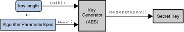

이 항에서는, JCA 로 제공하는 코어 클래스와 인터페이스에 대해 설명합니다.
Provider클래스와Security클래스-
SecureRandom,MessageDigest,Signature,Cipher,Mac,KeyFactory,SecretKeyFactory,KeyPairGenerator,KeyGenerator,KeyAgreement,AlgorithmParameters,AlgorithmParameterGenerator,KeyStore, 및CertificateFactory엔진 클래스 Key인터페이스 및 클래스- 「알고리즘 파라미터의 스펙의 인터페이스 및 클래스」 및「열쇠 스펙의 인터페이스 및 클래스」
- 그 외의 지원 및 유용한 인터페이스 및 클래스
주:
CertPathBuilder ,CertPathValidator , 및 CertStore 엔진 클래스의 자세한 것은,「Java(TM) PKI 개발자 안내」를 참조해 주세요.
Provider,Security,SecureRandom,MessageDigest,Signature,Cipher, 및 Mac), 다음에 다양한 지원 클래스에 도착해 설명합니다. 현시점에서는, 열쇠 (공개, 비공개, 및 비밀)는 다양한 JCA 클래스에 의해 생성 및 표현되어 고레벨의 클래스에 의해 그 조작의 일부로서 사용된다고 하는 설명만으로 충분합니다.
이 항에서는, 각 클래스 및 인터페이스의 메인 메소드의 서명을 나타냅니다. 해당하는예의 항에는, 클래스 (MessageDigest,Signature,KeyPairGenerator,SecureRandom,KeyFactory, 및 열쇠 스펙 클래스)의 예가 있습니다.
관련하는 Security API 패키지의 완전한 레퍼런스 문서는, 다음의 패키지의 개요에 있습니다.
Provider 클래스
「암호화 서비스 프로바이더」(이 문서에서는 「프로바이더」라고도 불린다)이란, JDK Security API 의 암호화 기능의 부분집합의 고정 구현을 제공하는 패키지 또는 패키지 세트입니다.
Provider클래스는, 이러한 패키지나 패키지 세트에의 인터페이스입니다. 프로바이더명, 버젼 번호, 그 외의 정보에 액세스하기 위한 메소드를 갖추고 있습니다.Provider클래스를 사용하면(자), 암호화 서비스의 구현을 등록할 뿐만 아니라, 그 외의 시큐리티 서비스의 구현을 등록할 수도 있습니다. 그 외의 시큐리티 서비스는, JDK Security API 또는 그 확장 기능의 1 개의 일부로서 정의되고 있는 경우가 있습니다.암호화 서비스의 구현을 제공하려면 , 엔티티 (개발 그룹등)는 구현 코드를 작성해,
Provider클래스의 서브 클래스를 생성합니다.Provider서브 클래스의 생성자 은, 프로바이더가 구현한 서비스를 검색하기 위해서 JDK Security API 가 사용하는 각종 프로퍼티의 값을 설정합니다. 즉, 서브 클래스는, 서비스를 구현하는 클래스명을 지정합니다.
"> 프로바이더 패키지를 구현할 수 있는 서비스에는, 다양한 종류가 있습니다. 상세한 것에 대하여는,「엔진 클래스와 알고리즘」을 참조해 주세요.
구현이 다르면(자), 특징도 달라지는 경우가 있습니다. 소프트웨어 베이스의 것도 있으면, 하드웨어 베이스의 것도 있습니다. 플랫폼 독립의 것도 있으면, 플랫폼 고유의 것도 있습니다. 또, 리뷰나 평가용으로 사용할 수 있는 프로바이더 코드도 있으면, 사용할 수 없는 것도 있습니다. JCA 에서는, 최종 사용자와 개발자의 쌍방이 독자적인 요구를 결정할 수 있습니다.
이 항에서는, 최종 사용자를 위한 암호 구현의 인스톨 방법과 요구에의 맞추는 방법, 및 개발자를 위한 필요한 구현의 요구 방법을 설명합니다.
주:프로바이더의 구현의 자세한 것은,「Java 암호화 아키텍쳐(architecture)용 프로바이더의 구현 방법」을 참조해 주세요.
프로바이더 구현의 요구 및 획득 방법
이 API 의 각엔진 클래스에 대해서는, 구현 인스턴스가 요구되어 그 엔진 클래스의getInstance메소드의 1 개를 호출해 인스턴스가 생성됩니다. 이 때에, 희망하는 알고리즘의 이름과 구현하는 프로바이더 (또는Provider클래스)의 이름 (옵션)을 지정합니다.EngineClassName 는, 필요한 엔진 타입 (MessageDigest/Cipher/그 외)입니다. 예를 나타냅니다.static EngineClassName getInstance(String algorithm) throws NoSuchAlgorithmException static EngineClassName getInstance(String algorithm, String provider) throws NoSuchAlgorithmException, NoSuchProviderException static EngineClassName getInstance(String algorithm, Provider provider) throws NoSuchAlgorithmExceptionMessageDigest md = MessageDigest.getInstance("MD5"); KeyAgreement ka = KeyAgreement.getInstance("DH", "SunJCE");각각, 「MD5」MessageDigest 및 「DH」KeyAgreement 객체의 인스턴스를 돌려줍니다.「부록 A」에는,Java 환경에서의 사용에 대해 표준화 되고 있는 이름의 리스트가 있습니다. 일부의 프로바이더에는, 같은 알고리즘을 참조하는 별명이 있는 경우도 있습니다. 예를 들어, 「SHA-1」알고리즘이 「SHA1」로서 참조되는 경우가 있습니다. 반드시 모든 프로바이더가 똑같이 알고리즘명의 별명을 가지는 것은 아니기 때문에, 어플리케이션은 별명은 아니고 표준명을 사용할 필요가 있습니다.
주:알고리즘명의 대문자와 소문자는 구별되지 않습니다. 예를 들어, 다음의 호출은 모두 등가로 간주해집니다.MessageDigest.getInstance("SHA-1") MessageDigest.getInstance("sha-1") MessageDigest.getInstance("sHa-1")
프로바이더를 지정하지 않는 경우,
getInstance는, 지정된 알고리즘에 관련한다, 요구된 암호화 서비스의 구현에 대응하는 등록 프로바이더를 검색합니다. 어느 Java 가상 머신 (JVM)에서도, 프로바이더는 지정의 「우선 순위」로인스톨 됩니다. 우선 순위란, 특정 프로바이더의 지정이 없는 경우에, 프로바이더 리스트가 검색되는 순위입니다. 예를 들어, JVM 에,PROVIDER_1와PROVIDER_2라고 하는 2 개의 프로바이더가 인스톨 되어 다음과 같이 되어 있으면(자) 가정합니다.여기서, 3 개의 시나리오에 대해 보겠습니다.
PROVIDER_1는 SHA1withDSA, SHA-1, MD5, DES, DES3 를 구현
PROVIDER_1의 우선 순위가 1 (최고의 우선 순위)
PROVIDER_2는 SHA1withDSA, MD5withRSA, MD2withRSA, MD2, MD5, RC4, RC5, DES, RSA 를 구현PROVIDER_2의 우선 순위는 2
- MD5 구현을 검색한다고 한다. 어느 쪽의 프로바이더도 이 구현을 공급한다.
PROVIDER_1가 최고의 우선 순위를 가져 최초로 검색되므로,PROVIDER_1구현이 반환된다- MD5withRSA 서명 알고리즘을 검색하는 경우, 우선 최초로
PROVIDER_1가 검색된다. 구현이 발견되지 않기 때문에 다음에PROVIDER_2가 검색된다. 구현이 발견되므로, 이 프로바이더가 반환된다- SHA1withRSA 서명 알고리즘을 검색하는 경우를 상정한다. 이것을 구현하는 프로바이더는 인스톨되어 있지 않기 때문에,
NoSuchAlgorithmException가 throw 된다프로바이더 인수를 가지는
getInstance메소드는, 필요한 알고리즘을 제공하는 프로바이더를 지정하고 싶은 개발자를 위한 것입니다. 예를 들어, 연방 증명서를 받은 프로바이더 구현을 연방국을 사용하고 싶다고 합니다.PROVIDER_1의 SHA1withDSA 구현은 이 증명서를 받지 않았는데 대해,PROVIDER_2의 DSA 구현이 이것을 받고 있으면(자) 가정합니다.연방국의 프로그램은 이하의 호출을 실행합니다.
PROVIDER_2가 인증된 구현을 가지기 (위해)때문에, 이것을 지정합니다.Signature dsa = Signature.getInstance("SHA1withDSA", "PROVIDER_2");이 경우,
PROVIDER_2가 인스톨되어 있지 않으면 인스톨 되고 있는 다른 프로바이더가 요구 알고리즘을 구현하고 있는 경우여도,NoSuchProviderException가 throw 됩니다.프로그램은, (
Security클래스의getProviders메소드를 사용해) 인스톨 되고 있는 프로바이더의 리스트를 획득해, 리스트로부터 선택할 수도 있습니다.
주: 범용 어플리케이션은, 특정의 프로바이더로부터 암호화 서비스를 요구하지 않게 할 필요가 있습니다. 요구를 실시하면, 어플리케이션은 다른 Java 구현으로 사용할 수 없을 가능성이 있는 특정의 프로바이더에 연결시킬 수 있습니다. 특정의 요구된 프로바이더보다 우선 순위가 높은, 사용 가능한 최적화된 프로바이더 (예를 들어, PKCS11 에 의한 하드웨어 가속기 또는 Microsoft 의 MSCAPI 등의 네이티브 OS 구현)를 이용할 수 없는 경우도 있습니다.
프로바이더의 인스톨
암호화 프로바이더를 사용하려면 , 최초로 인스톨 해, 다음에 정적 또는 동적으로 등록합니다. 다양한 Sun 프로바이더가 이 릴리스에 동고 되어 있어 (
SUN,SunJCE,SunJSSE,SunRsaSign등), 벌써 인스톨 및 등록되어 있습니다. 이후의 항에서는, 추가 프로바이더의 인스톨 및 등록 방법에 대해 설명합니다.프로바이더 클래스의 인스톨
프로바이더 클래스의 인스톨에는, 다음의 2 개의 방법이 있습니다.
- 일반적으로의 Java classpath
클래스가 포함되고 있는 zip 또는 JAR 파일을, classpath 의 임의의 장소에 둔다. 일부의 알고리즘 타입 (암호)에서는, 프로바이더는 서명된 JAR 파일일 필요가 있습니다.
- 인스톨/번들 된 확장 기능
프로바이더는, 표준의 확장 기능 디렉토리에 배치되었을 경우, 「인스톨형」확장 기능이라고 보여집니다. Sun 의 JDK 에서는, 다음의 장소에 배치됩니다.
여기서,<java-home> 는, 런타임 소프트웨어의 인스톨처 디렉토리 (JavaTM Runtime Environment (JRE)의 톱 레벨 디렉토리 또는 JavaTM JDK 소프트웨어의 jre 디렉토리)를 가리킵니다. 예를 들어, JDK 6 을<java-home>/lib/ext [Unix] <java-home>\lib\ext [Windows]/home/user1/JDK1. 6.0디렉토리 (Solaris), 또는C:\Java\JDK1. 6.0디렉토리 (Microsoft Windows)에 인스톨 했을 경우, JAR 파일을 다음의 디렉토리에 인스톨 할 필요가 있습니다./home/user1/JDK1. 6.0/jre/lib/ext [Unix] C:\JDK1. 6.0\jre\lib\ext [Windows]같이 JRE 6 을
/home/user1/jre1. 6.0디렉토리 (Solaris), 또는C:\jre1. 6.0디렉토리 (Microsoft Windows)에 인스톨 했을 경우, JAR 파일을 다음의 디렉토리에 인스톨 할 필요가 있습니다.확장 기능의 배치 방법의 자세한 것은,「확장 기능의 배치」를 참조해 주세요./home/user1/jre1. 6.0/lib/ext [Unix] C:\jre1. 6.0\lib\ext [Windows]프로바이더의 등록
다음의 순서에서는, 등록이 끝난 프로바이더의 리스트에 프로바이더를 추가합니다. 프로바이더는, Java 어플리케이션을 실행하기 전에 시큐리티 프로퍼티 구성 파일을 편집해 정적으로 등록하는지, 또는 실행시에 메소드를 호출해 동적으로 등록할 수 있습니다. 파괴 행위를 실시하는 프로바이더의 인스톨이 실행 환경에 추가되는 것을 막기 위해서(때문에), 프로바이더를 동적으로 등록하려고 하는 어플리케이션은 적절한 실행 특권을 보관 유지하고 있을 필요가 있습니다.
정적 등록
구성 파일은, 다음의 디렉토리에 포함되고 있습니다.등록된 프로바이더 마다, 이 파일은 다음의 형식의 문장을 보관 유지합니다.<java-home>/lib/security/java.security [Unix] <java-home>\lib\security\java.security [Windows]security.provider. n=masterClassName이것은 프로바이더를 선언해, 그 우선 순위 n 를 지정합니다. 우선 순위란, 특정 프로바이더의 지정이 없는 경우에, 요구된 서비스에 관해서 검색되는 프로바이더의 순위입니다. 순위는 1 으로부터 시작됩니다. 1 이 최우선으로 다음에 2, 3 ...(와)과 계속됩니다.
masterClassName에는, 프로바이더의 「마스터 클래스」를 완전 수식명으로 지정합니다. 프로바이더의 문서로 그 마스터 클래스를 지정합니다. 이 클래스는, 항상Provider클래스의 서브 클래스입니다. 서브 클래스 생성자 은, 프로바이더가 구현한 알고리즘이나 그 외의 기능을 검색하기 위해서 Java 암호화 API 에 필요한 각종 프로퍼티의 값을 설정합니다.JDK 에는, 「SUN」나 「SunJCE」 등, 표준으로 자동적으로 인스톨 및 구성되는 프로바이더가 부수 합니다. 「SUN」프로바이더의 마스터 클래스는,
sun.security.provider패키지내의SUN클래스입니다. 대응하는 java.security 파일 엔트리는, 다음과 같습니다.security.provider. 5=sun.security.provider.Sun다른 JCA 프로바이더를 이용하는 경우, 대체 프로바이더를 참조하는 행을 추가해, 우선 순위를 지정합니다. 필요에 따라서 다른 프로바이더의 순서도 조정합니다.
CompanyX 의 프로바이더의 마스터 클래스가
com.companyx.provider.ProviderX로, 이 프로바이더를 우선 순위가 제 8 위의 프로바이더로서 구성한다고 합니다. 이 때문에는, 다음의 행을java.security파일에 추가합니다.security.provider. 8=com.companyx.provider.ProviderX동적 등록
프로바이더를 동적으로 등록하려면 , 어플리케이션은Security클래스의addProvider또는insertProviderAt의 어느 쪽인가의 메소드를 호출합니다. 이 등록은 VM 인스턴스간에 지속적은 아니고, 적절한 특권을 가지는 「신뢰할 수 있다」프로그램으로 밖에 실행할 수 없습니다. Security 클래스를 참조해 주세요.프로바이더 액세스권의 설정
암호화 프로바이더가 사용되고 (즉, Cipher, KeyAgreement, KeyGenerator, Mac, 또는 SecretKeyFactory 의 구현을 제공하는 프로바이더), 프로바이더가 인스톨이 끝난 확장 기능이 아닌 경우, JCA 를 사용하는 애플릿 또는 어플리케이션을 시큐리티 매니저가 인스톨 되고 있는 환경에서 실행할 때는액세스권을 부여할 필요가 있는 경우가 있습니다. 일반적으로, 애플릿의 실행시에는 시큐리티 매니저가 항상 인스톨 됩니다. 어플리케이션의 경우에서도, 어플리케이션 자체의 코드내 또는 커멘드행 인수로 지정하는 것으로써, 시큐리티 매니저를 인스톨 할 수 있습니다. 디폴트 시스템의정책 구성 파일은, 인스톨형 확장 기능 (즉,확장 기능 디렉토리에 인스톨 되고 있다)에 모든 액세스권을 부여하기 위해(때문에), 인스톨형 확장 기능에 액세스권을 설정할 필요는 없습니다.
벤더의 제공하는 각 프로바이더용 문서에는, 필수의 액세스권이나 그것을 부여할 방법이 기재되어 있습니다. 예를 들어, 확장 기능이 인스톨형은 아니고, 시큐리티 매니저가 인스톨 되고 있는 경우, 프로바이더에 다음의 액세스권을 부여할 필요가 있습니다.
java.lang.RuntimePermission "getProtectionDomain"(클래스 보호 도메인을 취득하기 위해(때문에)). 프로바이더는, 자기 무결성 체크의 실행 과정에서, 독자적인 보호 도메인의 취득이 필요하게 되는 경우가 있습니다.java.security.SecurityPermission "putProviderProperty. {name}"(프로바이더 프로퍼티을 설정하기 위해(때문에),{name}에는 실제의 프로바이더명을 지정)예를 들어, 이름이 「MyJCE」로, 코드가
myjce_provider.jar내에 존재하는 프로바이더에 액세스권을 부여하는 샘플 코드를 다음에 나타냅니다. 이런 종류의 문장은, 정책 파일에 기술됩니다. 이 예에서는,myjce_provider.jar파일은/localWork디렉토리에 포함되는 것으로 합니다.grant codeBase "file:/localWork/myjce_provider.jar" { permission java.lang.RuntimePermission "getProtectionDomain"; permission java.security.SecurityPermission "putProviderProperty.MyJCE"; };
Provider클래스의 메소드각
Provider클래스 인터페이스는, 이름 (현시점에서는 대문자 소문자를 구별한다), 버젼 번호, 및 프로바이더와 그 서비스의 캐릭터 라인 기술을 가집니다. 이하의 메소드를 호출해, 이러한 정보에 대해Provider의 인스턴스를 조회할 수 있습니다.public String getName() public double getVersion() public String getInfo()
Security 클래스
Security클래스는, 인스톨 되고 있는 프로바이더 및 시큐리티에 관한 프로퍼티을 관리합니다. 이 클래스에 포함되는 것은, 인스턴스가 생성되지 않는 static 메소드 뿐입니다. 프로바이더의 추가 또는 삭제, 및Security프로퍼티의 설정용 메소드는, 신뢰할 수 있는 프로그램에 의해서 밖에 실행할 수 없습니다. 현시점에서의 「신뢰할 수 있는 프로그램」은, 이하의 어떤 것인가입니다.어느 코드가, 실행하려고 하고 있는 액션 (프로바이더의 추가등)을 실시할 수가 있는 것 같은, 신뢰할 수 있는 코드이다고 판단하려면 , 그 액션을 실시하는 적절한 권한이 그 애플릿에게 줄 수 있고 있을 필요가 있습니다. 인스톨 한 JDK 의 정책 구성 파일에서는, 지정된 코드 소스로부터의 코드에 대해, 어떠한 액세스권 (system resource에의 액세스의 종류)을 주는지를 지정합니다. 자세한 것은, 이후의 설명 및「디폴트의 Policy 의 구현과 정책 파일의 구문」이라고 「Java 시큐리티 아키텍쳐(architecture)」를 참조해 주세요.
- 시큐리티 매니저아래에서 동작하고 있지 않는 로컬 어플리케이션
- 지정된 메소드를 실행하는 권한이 있는 애플릿 또는 어플리케이션 (이하를 참조)
실행되는 코드는, 항상, 특정의 「코드 소스」로부터 온다고 생각됩니다. 코드 소스에는, 그 코드의 원의 장소 (URL) 뿐만이 아니라, 코드의 서명에 사용된 비공개키에 대응하는 임의의 공개키에의 참조도 포함되어 있습니다. 코드 소스내의 공개키는, 사용자의키스토어의 별명 (기호명)으로 참조합니다.
정책 구성 파일내에서는, 코드 소스는, 코드 베이스 (URL), 및 (
signedBy로 시작된다) 별명의 2 개의 컴퍼넌트로 나타내집니다. 별명은, 코드의 서명의 검증에 사용할 필요가 있는 공개키를 포함한 키스토어의 엔트리를 식별합니다.이러한 파일내의 각 「허가」문은, 지정된 코드 소스에 액세스권세트를 주어 허가된 처리를 지정합니다.
다음에, 정책 구성 파일의 예를 나타냅니다.
이 구성 파일은, 로컬 파일 시스템상의grant codeBase "file:/home/sysadmin/", signedBy "sysadmin" { permission java.security.SecurityPermission "insertProvider. *"; permission java.security.SecurityPermission "removeProvider. *"; permission java.security.SecurityPermission "putProviderProperty. *"; };/home/sysadmin/디렉토리내의 서명된 JAR 파일로부터 로드 된 코드가, 프로바이더의 추가 또는 삭제, 혹은 프로바이더의 프로퍼티의 설정을 할 수 있는 것을 나타냅니다. JAR 파일의 서명은, 사용자의 키스토어내의 별명sysadmin로 참조하는 공개키를 사용해 검증할 수 있습니다.코드 소스를 지정하는 요소는, 어느쪽이나 (또는 양쪽 모두를) 생략 가능합니다. 다음에,
codeBase를 생략 한 구성 파일의 예를 나타냅니다.이 정책가 시행되었을 경우,grant signedBy "sysadmin" { permission java.security.SecurityPermission "insertProvider. *"; permission java.security.SecurityPermission "removeProvider. *"; };sysadmin에 의해 서명된 JAR 파일의 코드에 의한 프로바이더의 추가 또는 삭제가 가능하게 됩니다. JAR 파일의 장소는 관계 없습니다.다음에, 서명자를 생략 한 예를 나타냅니다.
이 경우, 로컬 파일 시스템의grant codeBase "file:/home/sysadmin/" { permission java.security.SecurityPermission "insertProvider. *"; permission java.security.SecurityPermission "removeProvider. *"; };/home/sysadmin/디렉토리내에 놓여진 코드는, 프로바이더의 추가와 삭제를 실시할 수가 있습니다. 코드에 서명은 필요 없습니다.
codeBase와signedBy를 양쪽 모두 생략 한 예를 다음에 나타냅니다.이 예에서는, 코드 소스를 지정하는 요소가 어느쪽이나 생략 되고 있습니다. 따라서, 출처(소)가 어딘가, 서명이 붙어 있는지, 누구의 서명이 붙어 있을까에 관계없이, 어느 코드에서도 프로바이더의 추가와 삭제 을 할 수가 있습니다. 이 부여는 시큐리티 홀을 만들어 낼 가능성이 있기 (위해)때문에, 절대로추천하지 않습니다. 신뢰되어 있지 않은 코드에 의해 프로바이더가 인스톨 되기 (위해)때문에, 적절히 기능하는 구현에 의존하는 후속의 코드에 영향을 줄 가능성이 있습니다. 예를 들어, 파괴 행위를 실시하는grant { permission java.security.SecurityPermission "insertProvider. *"; permission java.security.SecurityPermission "removeProvider. *"; };Cipher객체가, 수신한 기밀 정보를 수중에 넣어 포함하는 경우가 있습니다.프로바이더의 관리
다음의 겉(표)에,
Security클래스내의 메소드 가운데, 인스톨 되고 있는프로바이더를 조회하기 위해서 사용할 수 있는 메소드와 실행시에 프로바이더를 인스톨 또는 삭제하기 위한 메소드의 요약을 나타냅니다.
프로바이더의 조회 메소드 설명 static Provider[] getProviders()인스톨 떠날 수 있어 모든 프로바이더를 포함한 배열 (즉, 각 패키지 프로바이더의 Provider서브 클래스)을 돌려줍니다. 배열내의프로바이더의 순서는, 우선 순위에 따릅니다.static Provider getProvider
(String providerName)이 메소드는, providerName라는 이름의프로바이더를 돌려줍니다. 이프로바이더가 발견되지 않으면null를 돌려줍니다.
프로바이더의 추가 메소드 설명 static int
addProvider(Provider provider)인스톨 된 프로바이더리스트의 말미에프로바이더를 추가합니다.프로바이더가 추가된 우선 순위를 돌려주는지, 벌써 인스톨 되고 있기 위해서(때문에)프로바이더가 추가되지 않았던 경우는-1을 돌려줍니다.static int insertProviderAt
(Provider provider, int position)지정된 위치에 신규의
프로바이더를 추가합니다. 어느 프로바이더가 요구된 장소에 인스톨 되었을 경우는, 그것까지 그 자리소에 있던 프로바이더, 및position보다 나머지의 위치의 모든 프로바이더의 순위는, 1 개(살) 나중에 되어, 일람의 최후미로 향해 1 개 이동합니다.프로바이더가 추가된 우선 순위를 돌려주는지, 벌써 인스톨 되고 있기 위해서(때문에)프로바이더가 추가되지 않았던 경우는-1을 돌려줍니다.
프로바이더의 삭제 메소드 설명 static void removeProvider(String name)지정한 이름의 프로바이더를 삭제합니다. 프로바이더가 인스톨되어 있지 않은 경우는, 아무것도 하지 않고 복귀합니다. 지정된 프로바이더가 삭제되면(자), 그 프로바이더보다 나머지의 위치에 있는 모든 프로바이더의 위치가 1 개전이 되어, 인스톨 된 프로바이더 일람의 선두로 향해 1 개 이동합니다.
주:프로바이더의 우선 순위를 변경하는 경우는, 우선 목적의 프로바이더를 삭제하고 나서, 희망하는 우선 순위의 위치에 다시 삽입할 필요가 있습니다.
시큐리티의 프로퍼티
Security클래스는, 시스템에 관한 시큐리티의 프로퍼티 리스트를 보관 유지합니다. 이러한 프로퍼티은System프로퍼티을 닮아 있습니다만, 시큐리티 관련입니다. 이러한 프로퍼티은, 정적이게도 동적이게도 설정할 수 있습니다. 정적 시큐리티 프로퍼티의 예 ("security.provider.i"시큐리티 프로퍼티에 의한 프로바이더의 정적인 등록)에 대해서는 벌써 설명했습니다. 프로퍼티을 동적으로 설정하는 경우, 신뢰할 수 있는 프로그램은 다음의 메소드를 사용할 수 있습니다.주:시큐리티 프로바이더의 리스트는, VM 의 기동중에 확립됩니다. 따라서, 전술의 메소드는, 프로바이더 리스트를 변경하는 경우에 사용해 주세요.static String getProperty(String key) static void setProperty(String key, String datum)구성 파일은, 다음의 디렉토리에 포함되고 있습니다.
<java-home>/lib/security/java.security [Unix] <java-home>\lib\security\java.security [Windows]
SecureRandom 클래스
SecureRandom클래스는, 난수 제네레이터 (RNG)의 기능을 제공하는엔진 클래스입니다. 강력한 암호화에 의한 난수를 생성하는 점이Random클래스와는 다릅니다. 제네레이터의 랜덤성이 불충분한 경우, 보호 기구가 간단하게 위협해지게 됩니다. 암호화열쇠의 생성이나 알고리즘의 파라미터 등, 난수는 암호화 전체로 사용됩니다.
">
SecureRandom객체의 작성다른 엔진 클래스와 같게,SecureRandom객체를 가져오려면 ,SecureRandom클래스의getInstance()static 팩토리 메소드의 1 개를 호출합니다.
SecureRandom객체의 배정 또는 재배정호출측이,
setSeed메소드의 1 개에의 호출로,getInstance메소드에의 호출에 따르는 경우 이외는,SecureRandom의 구현은, 제네레이터의 내부 상태 자체를 완전하게 랜덤화하려고 합니다.synchronized public void setSeed(byte[] seed) public void setSeed(long seed)SecureRandom객체에 한 번 배정이 넣을 수 있으면(자), 이것은 오리지날의 배정과 같이 랜덤에 비트를 생성합니다.
SecureRandom객체는,setSeed메소드의 1 개를 사용해 항상 재배정 될 가능성이 있습니다. 지정된 배정은, 기존의 배정과 옮겨놓을 수 있는 것이 아니라, 기존의 배정에 추가됩니다. 따라서, 호출을 반복해도, 랜덤성이 감소하지 않는 것이 보증됩니다.
SecureRandom객체의 사용법랜덤 바이트를 얻으려면 , 호출측은 단순하게 임의의 길이의 배열을 건네줍니다. 그러자(면), 이 배열에 랜덤 바이트가 들어옵니다.
synchronized public void nextBytes(byte[] bytes)배정 바이트의 생성
다른 난수 제네레이터에 배정을 넣는 경우 등, 필요한 경우는,generateSeed메소드를 호출해, 주어진 수의 배정 바이트를 생성할 수 있습니다.byte[] generateSeed(int numBytes)
MessageDigest 클래스
MessageDigest클래스는엔진 클래스에서, 안전한 암호화 메세지 다이제스트 (SHA-1 나 MD5 등)의 기능을 제공하도록(듯이) 설계되고 있습니다. 안전한 암호화 메세지 다이제스트는, 임의 사이즈의 입력 (바이트 배열)을 취해, 고정 사이즈 출력을 생성합니다. 이것을 「다이제스트」또는 「해시」라고 말합니다." > 예를 들어, MD5 의 알고리즘은 16 바이트의 다이제스트를 생성해, SHA1 의 알고리즘은 20 바이트의 다이제스트를 생성합니다.
다이제스트에는 다음의 2 개의 특징이 있습니다.
- 계산에 의해, 같은 값에 해시 된 2 개의 메세지를 검색할 수 없다
- 다이제스트의 생성에 사용한 입력 정보를 분명히 하지 않는다
메세지 다이제스트를 사용해, 일의로, 신뢰할 수 있는 데이터 식별자를 생성합니다. 데이터 식별자를 데이터의 「체크 섬」또는 「디지털 지문」이라고 부르는 일도 있습니다. 메세지 가운데 1 비트를 변경하는 것만으로, 다른 다이제스트치가 생성됩니다.
메세지 다이제스트에는 많은 용도가 있어, 의도적인가 어떤가에 관계없이, 언제 데이터가 변경되었는지를 판단할 수 있습니다. 근년, 일반적인 알고리즘에 약점이 있을지 어떨지를 판단하기 위해서(때문에) 큰 노력이 지불해지고 있습니다만, 결과는 다양합니다. 다이제스트 알고리즘을 선택하는 경우는, 최근의 레퍼런스를 조사해, 그 상황과 당면의 태스크에서의 타당성을 판단할 필요가 있습니다.
MessageDigest객체의 생성다이제스트 계산에서는, 우선 최초로 메세지 다이제스트의 인스턴스를 생성합니다.
MessageDigest객체는,MessageDigest클래스의getInstance()static 팩토리 메소드의 1 개를 사용하는 것에 의해 취득됩니다. 팩토리 메소드는, 초기화된 메세지 다이제스트 객체를 돌려줍니다. 따라서, 이후에로 초기화를 실시할 필요는 없습니다.메세지 다이제스트 객체의 업데이트
데이터의 다이제스트를 계산하기 위한 다음의 순서는, 초기화한 메세지 다이제스트 객체에 데이터를 넣는 것입니다. 모든 것을 한 번에, 또는 체크로 넣을 수가 있습니다. 다음의 몇개의
update메소드를 호출하는 것에 의해, 메세지 다이제스트에 건네줄 수가 있습니다.
void update(byte input) void update(byte[] input) void update(byte[] input, int offset, int len)다이제스트의 계산
update를 호출해 데이타체크를 넣은 후에, 다음의digest메소드 가운데 어떤 것이나 1 개를 사용해 다이제스트를 계산합니다.
byte[] digest() byte[] digest(byte[] input) int digest(byte[] buf, int offset, int len)최초의 메소드는, 계산된 다이제스트를 돌려줍니다. 2 번째의 메소드는, 다이제스트의 바이트 배열을 돌려주는
digest()를 호출하기 전에, 입력 바이트의 배열로 마지막update(input)를 실시합니다. 마지막 메소드는, 오프셋(offset) 위치offset로부터 개시하는 제공 버퍼buf내에 산출 다이제스트를 포함합니다.len는, 다이제스트에 할당할 수 있었던buf내의 바이트수입니다. 이 메소드는, 실제로buf내에 포함된 바이트수를 돌려줍니다. 버퍼내에 충분한 영역이 없는 경우, 메소드는 예외를 throw 합니다.자세한 것은,「코드예」의 항의
MessageDigest의 계산의 예를 참조해 주세요.
Signature 클래스
Signature클래스는엔진 클래스이며,DSA 나 RSAwithMD5 등의 암호화 디지털 서명 기능을 제공하도록(듯이) 설계되고 있습니다. 안전한 암호화 서명 알고리즘은, 임의 사이즈의 입력과 비공개카기를 잡아, 「서명」이라고 불리는 비교적 짧은 (고정 사이즈의 경우도 자주 있다) 바이트 캐릭터 라인을 생성합니다. 이 프로퍼티은 다음과 같습니다.또, 지정의 서명이, 관련 데이터의 실제의 인증 서명인가 어떤가를 검증할 수도 있습니다.
- 공개키와 비공개키의 페어의 소유자만이 서명을 작성할 수 있습니다. 계산에 의해, 공개키를 보관 유지하는 사람이 비공개키를 회복할 수 없습니다.
- 서명의 생성에 사용하는 비공개키에 대응하는 공개키가 주어진다. 이것은 입력의 인증성 및 무결성을 검증할 수 있다
- 서명 및 공개키는, 비공개키에 관한 정보를 분명하게는 하지 않는다
">
Signature객체는, 비공개키에서의 서명에 대해서 초기화되어 서명하는 데이터가 주어집니다. 결과의 서명 바이트는, 일반적으로은 서명된 데이터와 함께 보관 유지됩니다. 검증이 필요한 경우, 다른Signature객체가 작성되어 검증에 대해서 초기화되어 대응하는 공개키가 주어집니다. 데이터 및 서명 바이트는 signature (서명) 객체에게 건네져 데이터와 서명이 일치했을 경우에,Signature객체는 성공을 보고합니다.서명은 메세지 다이제스트를 닮아 있습니다만, 제공하는 보호의 종류의 점으로써 목적이 크게 차이가 납니다. 실제, 「SHA1WithRSA」등의 알고리즘은, 메세지 다이제스트 「SHA1」를 사용해 최초로 큰 데이터 세트를 관리하기 쉬운 형식에 「압축」해, 다음에 「RSA」알고리즘으로 결과의 20 바이트의 메세지 다이제스트에 서명합니다.
데이터의 서명 및 검증의 예는,예의 항을 참조해 주세요.
Signature객체 상태Signature객체는 모델 객체입니다. 즉,Signature객체는, 항상 지정 상태에 있어, 이 상태로 1 개의 형태의 오퍼레이션만을 실행할 수 있습니다. 상태는, 개개의 클래스에서 정의한 final (파이널) 정수의 정수로 나타내집니다.
Signature객체에 가능한 상태는, 다음의 3 개입니다.
UNINITIALIZEDSIGNVERIFYSignature객체가 처음으로 생성될 때는,UNINITIALIZED상태입니다.Signature클래스는, 상태를SIGN로 변경하는initSign와 상태를VERIFY로 변경하는initVerify의 2 개의 초기화 메소드를 정의합니다.
Signature객체의 생성서명을 붙이거나 검증하거나 하려면 , 최초로Signature의 인스턴스를 생성합니다.Signature객체는,SignaturegetInstance()static 팩토리 메소드의 1 개를 사용하는 것에 의해 취득됩니다.
Signature객체의 초기화
Signature객체를 사용하려면 , 최초로 반드시 이것을 초기화합니다. 초기화 메소드는, 객체를 서명용으로 사용할까 검증용으로 사용할까에 응해 다릅니다.서명으로 사용하는 경우, 객체는 최초로, 서명을 생성하는 엔티티의 비공개키를 사용해 초기화할 필요가 있습니다. 이 초기화는, 이하의 메소드를 호출해 실행합니다.
이 메소드에서는,final void initSign(PrivateKey privateKey)Signature객체는SIGN상태가 됩니다.
Signature객체를 검증으로 사용하는 경우는, 우선 최초로, 서명을 검증하는 엔티티의 공개키를 사용해 초기화할 필요가 있습니다. 이 초기화는, 이하의 몇개의 메소드를 호출해 실행합니다.
final void initVerify(PublicKey publicKey) final void initVerify(Certificate certificate)이 메소드에서는,
Signature객체는VERIFY상태가 됩니다.서명
Signature객체를 서명용으로 초기화했을 경우 (이 객체가SIGN상태의 경우), 서명을 붙이는 데이터를 객체에 넣을 수가 있습니다. 이것은, 이하의update메소드의 어떤 것이나 1 개를 1 회 또는 여러 차례 호출해 실행합니다.
final void update(byte b) final void update(byte[] data) final void update(byte[] data, int off, int len)서명을 붙이는 데이터가 모두
Signature객체에 들어갈 때까지,update메소드를 호출합니다.서명을 생성하려면 ,
sign메소드의 1 개를 호출할 뿐입니다.final byte[] sign() final int sign(byte[] outbuf, int offset, int len)최초의 메소드는, 서명의 결과를 바이트 배열로 돌려줍니다. 2 번째의 메소드는, 오프셋(offset) 위치 offset 로부터 개시하는 제공 버퍼 outbuf 내에 서명의 결과를 포함합니다. len 는, 서명에 할당할 수 있었던 outbuf 내의 바이트수입니다. 이 메소드는, 실제로 포함된 바이트수를 돌려줍니다.
서명의 encode는, 알고리즘에 의존합니다. Java 암호화 아키텍쳐(architecture)에서의 ASN. 1 encode의 사용 방법에 대해서는,표준명의 문서를 참조해 주세요.
sign메소드를 호출하면(자), signature (서명) 객체는,initSign를 호출해 최초로 서명용으로 초기화되었을 때 상태에 리셋 됩니다. 즉, 객체를 리셋 하므로, 필요하면update와sign를 호출해, 같은 비공개키를 사용해 다른 서명을 생성할 수 있습니다.혹은 다른 비공개키를 지정해,
initSign에의 신규 호출을 작성하거나(서명을 검증하기 위해서Signature객체를 초기화하는 목적으로)initVerify에의 신규 호출을 작성하거나 성 할 수 있습니다.검증
Signature객체를 검증용으로 초기화했을 경우 (VERIFY상태에 있는 경우)는, 지정의 서명이, 거기에 관련한 데이터의 실제의 인증 서명일지 어떨지를 검증할 수 있습니다. 이 처리를 개시하려면 , 검증 데이터 (서명 자체는 아니다)를 객체에 넣습니다. 데이터는, 다음의 몇개의update메소드를 호출하는 것에 의해 객체에게 건네집니다.final void update(byte b) final void update(byte[] data) final void update(byte[] data, int off, int len)검증하는 데이터가 모두
Signature객체에 들어갈 때까지,update메소드를 호출합니다. 이것으로, 다음의 몇개의verify메소드를 호출해 서명을 검증할 수 있습니다.final boolean verify(byte[] signature) final boolean verify(byte[] signature, int offset, int length)인수는, 서명을 포함한 바이트 배열일 필요가 있습니다. 인수는, 서명을 포함한 바이트 배열일 필요가 있습니다. 이 바이트 배열은, 전에 몇개의
sign메소드의 호출에 의해 반환된 서명 바이트를 보관 유지합니다.
verify메소드는, 코드화한 서명이update메소드에 넣은 데이터의 인증 서명인가 어떤가를 나타내는boolean를 돌려줍니다.
verify메소드를 호출하면(자), signature (서명) 객체는,initVerify를 호출해 검증용으로 초기화되었을 때 상태에 리셋 됩니다. 즉, 객체를 리셋 하므로,initVerify에의 호출로 지정한 공개키를 가지는 식별의 다른 서명을 검증할 수 있습니다.혹은 다른 비공개키를 지정해, (다른 엔티티의 서명을 검증하기 위해서
Signature객체를 초기화하는 목적으로)initVerify에의 신규 호출을 작성하거나(서명을 생성하기 위해서Signature객체를 초기화하는 목적으로)initSign에의 신규 호출을 작성하거나 할 수 있습니다.
Cipher 클래스
Cipher클래스는, 암호화 및 암호 해독으로 사용되는 암호 기능을 제공합니다. 암호화란, 데이터 ( 「clear text」라고 불린다) 및 「키」를 받아, 열쇠를 모르는 서드 파티에 있어 무의미한 데이터 ( 「암호 텍스트」)를 생성하는 처리입니다. 복호화는 그 역으로, 암호 텍스트 및 열쇠를 받아, clear text를 생성하는 처리입니다.

대칭 암호화 방식과 비대칭 암호 방식
암호화에는, 대칭 (비밀열쇠라고도 불린다)과 비대칭 (또는 공개키암호 방식)이라고 하는 2 개의 주요한 타입이 있습니다. 대칭 암호화 방식으로는, 같은 비밀열쇠가 데이터의 암호화와 복호화의 양쪽 모두를 실시합니다. 데이터의 기밀성을 보관 유지하려면 , 열쇠를 비공개로 하는 것이 중요해집니다. 한편, 비대칭 암호 방식은, 공개키와 비공개키의 페어를 사용해 데이터를 암호화합니다. 한편의 열쇠로 암호화된 데이터는, 한편의 열쇠로 복호화 됩니다. 사용자는 최초로 공개키와 비공개키의 페어를 생성해, 누구라도 액세스 할 수 있는 신뢰할 수 있는 데이타베이스에 공개키를 발행합니다. 그 사용자와 안전하게 통신하는 것을 희망하는 사용자는, 취득한 공개키를 사용해 데이터를 암호화합니다. 비공개키의 보유자만을 복호화 할 수 있습니다. 이 방식으로는, 비공개키를 기밀로 하는 것이 중요해집니다.RSA 등의 비대칭 알고리즘은, 일반적으로, 대칭 알고리즘보다 큰폭으로 늦어집니다. 이러한 알고리즘은, 대량 데이터를 효율적으로 보호하도록(듯이) 설계되고 있지 않습니다. 실제로는, 비대칭 알고리즘은, 대칭 알고리즘을 초기화하기 위해서 사용되는 소량의 비밀열쇠를 교환하는 경우에 사용됩니다.
스트림 암호와 블록 암호
블록과 스트림이라고 하는 2 개의 주요한 암호 타입이 있습니다. 블록 암호는, 블록 전체를 한 번에 처리합니다. 일반적으로은 긴 바이트장이 됩니다. 완전한 입력 블록을 작성하는데 데이터가 부족하는 경우는, 데이터의 패딩이 필요합니다. 즉, 암호화전에, 더미 바이트를 추가해 암호의 블록 사이즈의 배수로 합니다. 이러한 바이트는, 복호화의 단계에서 삭제됩니다. 패딩은, 어플리케이션인가, 또는 「PKCS5PADDING」등의 패딩 타입을 사용하도록(듯이) 암호를 초기화하는 것에 의해 실행할 수 있습니다. 이것에 대해서, 스트림 암호는 입력 데이터를 한 번에 1 개(살)의 작은 단위 (일반적으로은 바이트, 또는 비트의 경우도 있다)로 처리합니다. 이것에 의해, 암호는 임의의 양의 데이터를 패딩을 실시하지 않고 처리할 수 있습니다.조작 모드
단순한 블록 암호를 사용해 암호화하는 경우, 2 개(살)의 같은 plaintext의 블록은, 항상 같은 암호 텍스트의 블록을 생성합니다. 암호 텍스트를 찢으려고 하는 암호 해독자가 반복의 텍스트의 블록을 알아차리면(자), 간단하게 해독되어 버립니다. 텍스트에 복잡함을 더하기 위해서(때문에), 피드백 모드는, 암호화 알고리즘을 적용하기 전에, 이전의 출력 블록을 사용해 입력 블록을 변경합니다. 최초의 블록에는 초기치가 필요합니다. 이 값은, 초기화 벡터 (IV)로 불립니다. IV 는 암호화전에 단순하게 데이터를 변경하기 위해(때문에), IV 는 랜덤일 필요가 있습니다만, 반드시 비밀일 필요는 없습니다. CBC (Cipher Block Chaining), CFB (Cipher Feedback Mode), OFB (Output Feedback Mode) 등, 다양한 모드가 있습니다. ECB (Electronic Cookbook Mode)는, 피드백이 없는 모드입니다.AES 나 RSA 등의 일부의 알고리즘에서는 다른 길이의 열쇠가 가능합니다만, 그 이외 (DES 나 3DES 등)는 고정입니다. 긴 열쇠를 사용하는 암호화는, 일반적으로 메세지 복원에 대해서 저항력이 강한 일을 의미합니다. 여느 때처럼, 시큐리티와 시간이라고 하는 상반되는 것의 사이에 타협을 붙이기 (위해)때문에, 적절한 열쇠의 길이를 선택합니다.
대부분의 알고리즘은, 바이너리열쇠를 사용합니다. 대부분의 사람은, 16 진수로 표현되고 있어도, 긴 바이너리의 수치를 기억할 수 없습니다. 문자의 패스워드 쪽이 기억하는 것은 간단합니다. 일반적으로, 문자의 패스워드는 소수의 문자 ([a-zA-Z0-9] 등)로부터 선택되기 (위해)때문에, 「패스워드 베이스의 암호화」(PBE)등의 프로토콜은, 문자의 패스워드를 취득해 강력한 바이너리열쇠를 생성하도록(듯이) 정의되고 있습니다. 패스워드로부터 암호화열쇠를 취득하려고 하는 공격자의 태스크 (일반의 사전의 「단어->값」의 매핑이 사전에 계산되고 있는, 이른바 「사전 공격」에 의한다)를 매우 시간이 걸리는 것으로 하기 위해서(때문에), 대부분의 PBE 구현에서는, 열쇠의 랜덤성을 높이기 위해서(때문에) 난수에의 혼입 (salt 로 불린다)을 합니다.
Cipher 객체의 작성
Cipher객체는,CiphergetInstance()static 팩토리 메소드의 1 개를 사용하는 것에 의해 취득됩니다. 여기서의 알고리즘명은, 알고리즘명 뿐만이 아니라 「변환」을 지정하는 점으로써, 다른 엔진 클래스의 경우와 조금 다릅니다. 변환은, 지정된 입력에 대해서 실행해, 어떠한 출력을 생성하는 조작 (또는 조작세트)을 설명하는 캐릭터 라인입니다. 변환에는, 암호화 알고리즘 (DES등)의 이름이 반드시 포함됩니다. 거기에 모드 및 패딩 방식이 계속되는 경우도 있습니다.변환은, 다음의 서식에서 기술됩니다.
- "algorithm/mode/padding" 또는
- "algorithm"
예를 들어, 이하는 유효한 변환입니다.
"DES/CBC/PKCS5Padding" "DES"변환명만을 지정하면(자), 요구된 변환의 구현이 그 환경에서 사용 가능한가 어떤가를 시스템이 판별해, 복수의 구현이 존재하는 경우에는 우선도의 높은 구현이 존재하는 것을 돌려줍니다.
변환명과 패키지 프로바이더의 양쪽 모두를 지정하면(자), 시스템은 요구된 패키지내에 요구된 변환의 구현이 존재할지 어떨지를 확인해, 존재하지 않는 경우에는 예외를 throw 합니다.
모드나 패딩을 지정하지 않는 경우, 모드 및 패딩 방식의 프로바이더 고유의 디폴트 값가 사용됩니다. 예를 들어,
SunJCE프로바이더는,DES,DES-EDE, 및Blowfish암호의 디폴트 모드로서ECB를, 디폴트 패딩 방식으로서PKCS5Padding를 사용합니다. 이 때문에,SunJCE프로바이더에서는,
Cipher c1 = Cipher.getInstance("DES/ECB/PKCS5Padding");및Cipher c1 = Cipher.getInstance("DES");의 2 개의 문장은, 등가가 됩니다.CFB 나 OFB 등의 모드를 사용하면(자), 블록 암호는 암호의 실제의 블록 사이즈보다 작은 단위로 데이터를 암호화할 수 있습니다. 이러한 모드를 요구하는 경우, 「DES/CFB8/NoPadding」 및 「DES/OFB32/PKCS5Padding」변환에 나타나도록(듯이), 이 수치를 모드명에 추가하는 것으로써, 한 번에 처리하는 비트수를 옵션으로 지정할 수 있습니다. 수치를 지정하지 않는 경우, 프로바이더 고유의 디폴트가 사용됩니다 예를 들어,
SunJCE프로바이더에서는 디폴트의 64 비트가 DES 로 사용됩니다. 따라서, 블록 암호는, CFB8 나 OFB8 등의 8 비트 모드를 사용해, 바이트 지향의 스트림 암호로 변환할 수 있습니다.이 문서의「부록 A」에는, 변환의 알고리즘명, 모드, 및 패딩 방식 컴퍼넌트의 지정에 사용 가능한 표준명의 리스트가 게재되고 있습니다.
팩토리 메소드에 의해 반환되는 객체는 초기화되어 있지 않기 때문에, 사용하기 전에 초기화할 필요가 있습니다.
Cipher 객체의 초기화
getInstance를 개입시켜 취득된 Cipher 객체는, 다음의 4 개의 모드의 어느쪽이든으로 초기화할 필요가 있습니다. 이러한 모드는,Cipher클래스의 final (파이널) 정수의 정수로서 정의됩니다. 모드는, 심볼명으로 참조할 수 있습니다. 다음에, 각 모드의 심볼명 및 목적을 나타냅니다.
- ENCRYPT_MODE
- 데이터의 암호화
- DECRYPT_MODE
- 데이터의 암호 해독
- WRAP_MODE
- 안전하게 전송 하기 위해서
java.security.Key를 랩핑 한다- UNWRAP_MODE
- 랩핑 된 열쇠를
java.security.Key객체에 unwrapping 한다Cipher 초기화 메소드는, 각각 조작 모드 파라미터 (
opmode)를 취해, 그 모드용의 Cipher 객체를 초기화합니다. 다른 파라미터에는, 열쇠 (key) 또는 열쇠를 포함한 증명서 (certificate), 알고리즘 파라미터 (params), 및 난수의 발생원 (random)이 포함됩니다.Cipher 객체를 초기화하는 경우, 다음의 몇개의
init메소드를 호출합니다.public void init(int opmode, Key key); public void init(int opmode, Certificate certificate); public void init(int opmode, Key key, SecureRandom random); public void init(int opmode, Certificate certificate, SecureRandom random); public void init(int opmode, Key key, AlgorithmParameterSpec params); public void init(int opmode, Key key, AlgorithmParameterSpec params, SecureRandom random); public void init(int opmode, Key key, AlgorithmParameters params); public void init(int opmode, Key key, AlgorithmParameters params, SecureRandom random);초기화 벡터등의 파라미터를 필요로 하는 Cipher 객체를 암호화용으로 초기화하는 경우,
init메소드에 파라미터를 아무것도 지정하지 않으면 랜덤 파라미터를 생성하는지, 프로바이더 고유의 파라미터 세트 (디폴트)를 사용하는 것으로써, 기반이 되는 암호 구현이 필수 파라미터를 제공한다고 보여집니다.다만, 파라미터를 필요로 하는 Cipher 객체를 암호 해독용으로 초기화하는 경우,
init메소드에 파라미터를 아무것도 지정하지 않으면 사용한init메소드에 응해InvalidKeyException또는InvalidAlgorithmParameterException예외가 발생합니다.자세한 것은,「알고리즘 파라미터의 관리」에 관한 섹션을 참조해 주세요.
암호 해독에는, 암호화에 사용한 것과 같은 파라미터를 사용할 필요가 있습니다.
Cipher 객체를 초기화하면(자), 그때까지 획득한 상태가 모두 없어지는 것에 유의해 주세요. 즉, Cipher 를 초기화하는 것은, 그 Cipher 의 신규 인스턴스를 작성해 초기화하는 것으로 등가입니다. 예를 들어, 지정된 열쇠로 암호 해독을 실시하기 위해서(때문에) Cipher 를 초기화하고 나서, 암호화를 실시하기 위해서(때문에) 초기화하면(자), 암호 해독 모드로 획득한 상태는 모두 없어집니다.
데이터의 암호화 및 암호 해독
데이터의 암호화 또는 암호 해독은, 1 개의 스텝에서 실행 ( 「단일 부분 조작」)하는 일도 , 복수의 스텝에서 실행 ( 「복수 부분 조작」)할 수도 있습니다. 데이터의 길이가 불명한 경우, 또는 데이터가 너무 길어 한 번에 메모리에 포함할 수 없는 경우에, 복수 부분 조작은 유용합니다.
단독의 스텝에서 데이터의 암호화 또는 암호 해독을 실시하는 경우, 다음의 몇개의
doFinal메소드를 호출합니다.public byte[] doFinal(byte[] input); public byte[] doFinal(byte[] input, int inputOffset, int inputLen); public int doFinal(byte[] input, int inputOffset, int inputLen, byte[] output); public int doFinal(byte[] input, int inputOffset, int inputLen, byte[] output, int outputOffset)복수의 스텝에서 데이터의 암호화 또는 암호 해독을 실시하려면 , 다음의 몇개의
update메소드를 호출합니다.public byte[] update(byte[] input); public byte[] update(byte[] input, int inputOffset, int inputLen); public int update(byte[] input, int inputOffset, int inputLen, byte[] output); public int update(byte[] input, int inputOffset, int inputLen, byte[] output, int outputOffset)복수 부분 조작은, 상기의
doFinal메소드의 언젠가 (마지막 스텝에서 입력 데이터가 남겨지는 경우), 또는 다음의doFinal메소드의 어느쪽이든 (마지막 스텝에서 입력 데이터가 남지 않는 경우)을 사용해 종료시킵니다.public byte[] doFinal(); public int doFinal(byte[] output, int outputOffset);지정된 변환의 일부로서 패딩 (또는 안 패딩)이 요구되었을 경우, 모든
doFinal메소드로, 필요한 패딩 (또는 안 패딩) 조작이 모두 처리됩니다.
doFinal를 호출하면(자), Cipher 객체는init를 호출해 초기화했을 때 상태에 리셋 됩니다. 즉, Cipher 는 리셋 되어, 데이터를 한층 더 암호화 또는 암호 해독 (init의 호출로 지정된 조작 모드에 근거한다) 할 수 있게 됩니다.열쇠의 랩핑과 unwrapping
열쇠를 랩핑 하면(자), 어느 장소로부터 다른 장소에 안전하게 전송 할 수 있습니다.
wrap/unwrapAPI 는 열쇠 객체에 대해서 직접 기능하기 위해(때문에), 이 API 를 사용하면(자) 코드의 기술이 용이하게 됩니다. 다음의 메소드를 사용하면(자), 하드웨어 베이스의 열쇠의 안전한 전송도 가능하게 됩니다.Key 를 wrap 하는 경우, 우선 WRAP_MODE 의 Cipher 객체를 초기화해, 다음의 메소드를 호출합니다.
public final byte[] wrap(Key key);랩 된 열쇠의 바이트 (
wrap를 호출한 결과)를, 그 랩을 해제하는 다른 사용자에게 제공하는 경우, 수신자가unwrap를 실행하는데 필요한, 다음의 추가 정보도 송신할 필요가 있습니다.
- 열쇠 알고리즘의 이름
- 랩 된 열쇠의 형태 (
Cipher.SECRET_KEY,Cipher.PRIVATE_KEY, 또는Cipher.PUBLIC_KEY의 언젠가)열쇠 알고리즘명은, 다음에 나타내도록(듯이) Key 인터페이스로부터
getAlgorithm메소드를 호출하는 것으로 확인할 수 있습니다.public String getAlgorithm();
wrap에의 호출에 의해 반환된 바이트의랩을 해제하려면 , UNWRAP_MODE 의 Cipher 객체를 초기화하고 나서, 이하를 호출합니다.public final Key unwrap(byte[] wrappedKey, String wrappedKeyAlgorithm, int wrappedKeyType));여기서,
wrappedKey는 랩에의 호출에 의해 반환된 바이트를,wrappedKeyAlgorithm는 랩 된 열쇠에 관련지을 수 있었던 알고리즘을,wrappedKeyType는 랩 된 열쇠의 형태를 각각 가리킵니다. 이것은,Cipher.SECRET_KEY,Cipher.PRIVATE_KEY, 또는Cipher.PUBLIC_KEY의 언젠가가 아니면 안됩니다.알고리즘 파라미터의 관리
기반이 되는 Cipher 구현에 의해 사용되는 파라미터 (어플리케이션에 의해
init메소드에 명시적에게 건네졌는지, 기반이 되는 구현 자체에 의해 생성되었다)는,getParameters메소드를 호출하는 것으로 Cipher 객체로부터 취득할 수 있습니다. 이 메소드는, 파라미터를java.security.AlgorithmParameters객체 (파라미터가 사용되지 않는 경우는null)로서 돌려줍니다. 파라미터가 초기화 벡터 (IV)의 경우,getIV메소드를 호출하는 것으로 파라미터를 취득할 수 있습니다.다음의 예에서는, 패스워드 베이스 암호화 (PBE)를 구현하는 Cipher 객체를, 파라미터를 사용하지 않고 열쇠만을 사용해 초기화합니다. 다만, 선택된 패스워드 베이스 암호화용으로 선택된 알고리즘은,salt 및 iteration count 라고 하는 2 개의 파라미터를 필요로 합니다. 이것들은, 기반이 되는 알고리즘 구현 자체에 의해 생성됩니다. 어플리케이션은, 생성된 파라미터를 이하의 방법으로 Cipher 객체로부터 취득할 수 있습니다.
import javax.crypto. *; import java.security.AlgorithmParameters; // get cipher object for password-based encryption Cipher c = Cipher.getInstance("PBEWithMD5AndDES"); // initialize cipher for encryption, without supplying // any parameters. Here, "myKey" is assumed to refer // to an already-generated key. c.init(Cipher.ENCRYPT_MODE, myKey); // encrypt some data and store away ciphertext // for later decryption byte[] cipherText = c.doFinal("This is just an example". getBytes()); // retrieve parameters generated by underlying cipher // implementation AlgorithmParameters algParams = c.getParameters(); // get parameter encoding and store it away byte[] encodedAlgParams = algParams.getEncoded();암호 해독에는, 암호화에 사용한 것과 같은 파라미터를 사용할 필요가 있습니다. 이것들은, 인코딩으로부터 인스턴스화하는 것이 가능하고, 다음에 나타내도록(듯이), 대응하는 Cipher 객체를 암호 해독용으로 초기화할 때에 사용할 수 있습니다.
import javax.crypto. *; import java.security.AlgorithmParameters; // get parameter object for password-based encryption AlgorithmParameters algParams; algParams = AlgorithmParameters.getInstance("PBEWithMD5AndDES"); // initialize with parameter encoding from above algParams.init(encodedAlgParams); // get cipher object for password-based encryption Cipher c = Cipher.getInstance("PBEWithMD5AndDES"); // initialize cipher for decryption, using one of the // init() methods that takes an AlgorithmParameters // object, and pass it the algParams object from above c.init(Cipher.DECRYPT_MODE, myKey, algParams);Cipher 객체의 초기화시에 파라미터를 일절 지정하지 않고, 기반이 되는 구현이 몇개의 파라미터를 사용할지 어떨지 불명한 경우, Cipher 객체의
getParameters메소드를 호출해, 반환되는 값을 체크하는 것만으로 확인할 수 있습니다. 반환값이null의 경우, 파라미터가 사용되지 않았던 것을 나타냅니다.
SunJCE프로바이더에 의해 구현되는 다음의 암호 알고리즘은, 파라미터를 사용합니다.
- DES, DES-EDE, 및 Blowfish 는, 피드백 (즉 CBC, CFB, OFB, 또는 PCBC) 모드에서의 사용시에, 초기화 벡터 (IV)를 사용합니다.
javax.crypto.spec.IvParameterSpec클래스는, 지정된 IV 에서의 Cipher 객체의 초기화에 사용할 수 있습니다.- PBEWithMD5AndDES 는, salt 및 iteration count 로 구성되는 파라미터 세트를 사용합니다.
javax.crypto.spec.PBEParameterSpec클래스는, 지정된 salt 및 iteration count 를 사용해 PBEWithMD5AndDES 를 구현하는 Cipher 객체를 초기화하는 경우에 사용할 수 있습니다.
SealedObject클래스를 사용하는 경우, 암호 해독 조작에 사용하는 알고리즘 파라미터의 포함 또는 전송에 대해 걱정할 필요는 없습니다. 이 클래스는, 씰 (암호화)에 사용되는 파라미터가 암호화된 객체 컨텐츠에 첨부합니다. 또, 안시르 (암호 해독)에서도 같은 파라미터를 사용합니다.암호 출력시의 고려사항
Cipher 의
update및doFinal안에는, 호출 측에 의한 출력 버퍼의 지정이 가능한 것이 있습니다. 암호화 또는 암호 해독 된 데이터는, 이 버퍼내에 출력됩니다. 이 경우, 암호화 또는 암호 해독 조작의 결과를 보관 유지 가능한 한의 크기의 버퍼를 건네주는 것은 중요합니다.Cipher 내의 다음의 메소드를 사용해, 설정해야 할 출력 버퍼의 사이즈를 확인할 수 있습니다.
public int getOutputSize(int inputLen)
그 외의 Cipher 베이스의 클래스
Cipher를 내부적으로 사용해 공통의 암호 사용에의 간단한 액세스를 제공하는, 몇개의 헬퍼 클래스가 있습니다.Cipher Stream 클래스
기존의
InputStream/OutputStream와Cipher객체를 결합하는 것에 의해, 단순하고 안전한 스트림 베이스의 통신 객체를 작성할 수 있습니다.CipherInputStream 클래스
이 클래스는, 통과하는 데이터의 암호화 또는 암호 해독을 실시하는
FilterInputStream입니다. 이것은,InputStream또는 그 서브 클래스의 언젠가, 및Cipher로 구성됩니다. CipherInputStream 는, Cipher 객체의 삽입처의, 시큐리티 보호된 입력 스트림을 나타냅니다. CipherInputStream 의read메소드는, 기반이 되는 InputStream 로부터 읽어내져 파묻힌 Cipher 객체에 의해 한층 더 처리된 데이터를 돌려줍니다. Cipher 객체는, CipherInputStream 로 사용하기 전에 완전하게 초기화할 필요가 있습니다.예를 들어, 파묻힌 Cipher 가 암호 해독용으로 초기화되고 있는 경우, CipherInputStream 는 기반이 되는 InputStream 로부터 읽어들인 데이터의 암호 해독을 시도하고 나서, 데이터를 어플리케이션에 돌려줍니다.
이 클래스는, 상위 클래스
java.io.FilterInputStream및java.io.InputStream의 시멘틱스 (특히 에러에 관한 시멘틱스)에 엄밀하게 준거합니다. 이 클래스는, 상위 클래스에서 지정된 메소드를 정확하게 보관 유지해, 그것들 모든 것을 오버라이드(override) 합니다. 이 때문에, 파묻힌 암호에 의한 데이터의 추가 처리가 가능하게 됩니다. 게다가 이 클래스는, 상위 클래스가 throw 하지 않는 예외를 모두 캐치 합니다. 특히,skip(long)메소드는, Cipher 에 의해 처리된 데이터만을 무시합니다.이 클래스를 사용하는 프로그래머에게 있어, 이 클래스가 정의 또는 오버라이드(override)되어 있지 않은 메소드 (상위 클래스의 어느 쪽인가에 나중에 추가된 신규 메소드 또는 생성자 )를 사용하지 않게 하는 것은 중요합니다. 이러한 메소드 구현은, CipherInputStream 에의 시큐리티면의 영향을 고려에 넣지 않기 때문입니다.
사용 방법의 일례로서
cipher1가 암호화용으로 초기화되고 있는 경우를 생각해 봅시다. 이하의 코드는, 암호 및 FileInputStream 를 포함한 CipherInputStream 를 사용해, 입력 스트림 데이터를 암호화하는 방법을 나타냅니다.FileInputStream fis; FileOutputStream fos; CipherInputStream cis; fis = new FileInputStream("/tmp/a.txt"); cis = new CipherInputStream(fis, cipher1); fos = new FileOutputStream("/tmp/b.txt"); byte[] b = new byte[8]; int i = cis.read(b); while (i ! = -1) { fos.write(b, 0, i); i = cis.read(b); } fos.close();상기의 프로그램은, 파일
/tmp/a.txt로부터 컨텐츠를 읽어내 암호화해, 결과 (암호화된 바이트)를/tmp/b.txt에 포함합니다.다음의 예는, CipherInputStream 및 FileInputStream 의 복수 인스턴스를 간단하게 접속하는 방법을 나타냅니다. 이 예에서는,
cipher1및cipher2가, 각각 암호화 및 암호 해독용으로 (대응하는 열쇠를 사용해) 초기화되고 있는 것으로 합니다.FileInputStream fis; FileOutputStream fos; CipherInputStream cis1, cis2; fis = new FileInputStream("/tmp/a.txt"); cis1 = new CipherInputStream(fis, cipher1); cis2 = new CipherInputStream(cis1, cipher2); fos = new FileOutputStream("/tmp/b.txt"); byte[] b = new byte[8]; int i = cis2.read(b); while (i ! = -1) { fos.write(b, 0, i); i = cis2.read(b); } fos.close();상기의 프로그램은, 파일
/tmp/a.txt의 내용을/tmp/b.txt에 카피합니다. 다만,/tmp/a.txt로부터의 읽기시에, 최초로 내용의 암호화, 다음에 암호 해독을 합니다. 실제의 곳, 이 프로그램은 텍스트를 암호화한 후, 곧바로 암호 해독을 실시하기 (위해)때문에, CipherInputStreams 의 체인을 알기 쉽게 가리키는 이외는 특히 유용한 것이 아닙니다.
CipherInputStream의 읽기 메소드는, 기반이 되는 암호로부터 데이터가 돌려주어질 때까지 블록 합니다. 블록 암호가 사용되는 경우, 기반이 되는 InputStream 로부터 암호 텍스트의 완전한 블록이 취득될 필요가 있습니다.CipherOutputStream 클래스
이 클래스는, 통과하는 데이터의 암호화 또는 암호 해독을 실시하는
FilterOutputStream입니다. 이것은,OutputStream또는 그 서브 클래스의 언젠가, 및Cipher로 구성됩니다. CipherOutputStream 는, Cipher 객체의 삽입처의, 시큐리티 보호된 출력 스트림을 나타냅니다. CipherOutputStream 의write메소드는, 파묻힌 Cipher 객체를 사용해 데이터를 처리하고 나서, 기반이 되는 OutputStream 에 데이터를 써냅니다. Cipher 객체는, CipherOutputStream 로 사용하기 전에 완전하게 초기화할 필요가 있습니다.예를 들어, 파묻힌 Cipher 가 암호화용으로 초기화되고 있는 경우, CipherOutputStream 는 데이터를 암호화하고 나서, 기반이 되는 출력 스트림에 써냅니다.
이 클래스는, 상위 클래스
java.io.OutputStream및java.io.FilterOutputStream의 시멘틱스 (특히 에러에 관한 시멘틱스)에 엄밀하게 준거합니다. 이 클래스는, 상위 클래스에서 지정된 메소드를 정확하게 보관 유지해, 그것들 모든 것을 오버라이드(override) 합니다. 이 때문에, 파묻힌 암호에 의한 모든 데이터의 추가 처리가 가능하게 됩니다. 게다가 이 클래스는, 상위 클래스가 throw 하지 않는 예외를 모두 캐치 합니다.이 클래스를 사용하는 프로그래머에게 있어, 이 클래스가 정의 또는 오버라이드(override)되어 있지 않은 메소드 (상위 클래스의 어느 쪽인가에 나중에 추가된 신규 메소드 또는 생성자 )를 사용하지 않게 하는 것은 중요합니다. 이러한 메소드 구현은, CipherOutputStream 에의 시큐리티면의 영향을 고려에 넣지 않기 때문입니다.
사용 방법의 일례로서
cipher1가 암호화용으로 초기화되고 있는 경우를 생각해 봅시다. 이하의 코드는, 암호 및 FileOutputStream 를 포함한 CipherOutputStream 를 사용해, 암호화된 데이터를 출력 스트림에 써내는 방법을 나타냅니다.FileInputStream fis; FileOutputStream fos; CipherOutputStream cos; fis = new FileInputStream("/tmp/a.txt"); fos = new FileOutputStream("/tmp/b.txt"); cos = new CipherOutputStream(fos, cipher1); byte[] b = new byte[8]; int i = fis.read(b); while (i ! = -1) { cos.write(b, 0, i); i = fis.read(b); } cos.flush();상기의 프로그램은, 파일
/tmp/a.txt로부터 컨텐츠를 읽어내 암호화해, 결과 (암호화된 바이트)를/tmp/b.txt에 포함합니다.다음의 예는, CipherOutputStream 및 FileOutputStream 의 복수 인스턴스를 간단하게 접속하는 방법을 나타냅니다. 이 예에서는,
cipher1및cipher2가, 각각 암호 해독 및 암호화용으로 (대응하는 열쇠를 사용해) 초기화되고 있는 것으로 합니다.FileInputStream fis; FileOutputStream fos; CipherOutputStream cos1, cos2; fis = new FileInputStream("/tmp/a.txt"); fos = new FileOutputStream("/tmp/b.txt"); cos1 = new CipherOutputStream(fos, cipher1); cos2 = new CipherOutputStream(cos1, cipher2); byte[] b = new byte[8]; int i = fis.read(b); while (i ! = -1) { cos2.write(b, 0, i); i = fis.read(b); } cos2.flush();상기의 프로그램은, 파일
/tmp/a.txt의 내용을/tmp/b.txt에 카피합니다. 다만,/tmp/b.txt에 기입하기 전에, 내용의 암호화 및 암호 해독을 합니다.블록암호 알고리즘을 사용하는 경우는, 데이터가 암호화되어 기반이 되는 출력 스트림에 송신되기 전에, plaintext 데이터의 완전한 블록을
CipherOutputStream에게 줄 필요가 있습니다.이 클래스의
flush와close메소드에는, 그 밖에 1 개(살)의 중요한 차이점이 있습니다. 캡슐화된 Cipher 객체가 패딩을 유효하게 해 블록 암호 알고리즘을 구현하는 경우, 이 차이점에 특히 유의할 필요가 있습니다.
flush는, 캡슐화된 Cipher 객체에 의해 처리필 보고의 버퍼링 된 출력 바이트를 모두 강제적으로 써내는 것으로, 기반이 되는 OutputStream 를 플래시 합니다. 캡슐화된 Cipher 객체에 의해 버퍼링 되어 처리 대기 상태에 있는 바이트는,써내지지 않습니다.close는, 기반이 되는 OutputStream 를 닫아, 관련지을 수 있던 모든 system resource를 해제합니다. 캡슐화된 Cipher 객체의doFinal메소드를 호출해, 이 객체에 의해 버퍼링 된 모든 바이트를 처리합니다. 한층 더flush메소드를 호출해, 처리한 바이트를 기반이 되는 스트림에 써냅니다.SealedObject 클래스
프로그래머는, 이 클래스를 사용해 객체를 작성해, 암호화 알고리즘을 이용해 그 기밀성을 보호할 수가 있습니다.
java.io.Serializable인터페이스를 구현하는 객체가 지정되었을 경우, 원의 객체를 직렬화 형식 ( 「딥 카피」)에서 캡슐화하는SealedObject를 작성해, DES 등의 암호화 알고리즘을 사용해 직렬화 된 내용을 씰 (암호화) 하는 것으로써, 기밀성을 보호할 수 있습니다. 그 후, 암호화된 내용의 암호 해독 (적정한 암호 해독열쇠를 사용), 및 직렬화 해제를 실시하는 것으로, 원의 객체를 복원할 수 있습니다.일반적인 사용법을, 다음의 코드예에 나타냅니다. 객체를 씰 하는 경우, 씰 대상의 객체로부터
SealedObject를 작성해, 직렬화 된 객체 내용을 암호화하는, 완전하게 초기화된Cipher객체를 작성합니다. 이 예에서는, 캐릭터 라인 「This is a secret」가 DES 알고리즘을 사용해 씰 됩니다. 씰 조작에 사용되는 모든 알고리즘 파라미터는,SealedObject의 내부에 포함되는 것에 유의해 주세요.// create Cipher object // NOTE: sKey is assumed to refer to an already-generated // secret DES key. Cipher c = Cipher.getInstance("DES"); c.init(Cipher.ENCRYPT_MODE, sKey); // do the sealing SealedObject so = new SealedObject("This is a secret", c);씰 된 원의 객체는, 다음이 다른 2 개의 방법으로 복원 가능합니다.
- 엄밀하게 동일한 알고리즘, 열쇠, 패딩 방식등으로 초기화되어 객체의 씰에 사용된
Cipher객체를 사용하는 방법c.init(Cipher.DECRYPT_MODE, sKey); try { String s = (String) so.getObject(c); } catch (Exception e) { // do something };이 방법에는, 암호 해독열쇠에 관한 지식이 없어도, 씰 된 객체의 안시르를 실행할 수 있다고 하는 이점이 있습니다. 예를 들어, 어느 파티가 암호 객체를 필수의 암호 해독열쇠를 사용해 초기화한 후에, 다른 파티에 건네주면(자), 그 파티는 씰 된 객체를 안시르 할 수 있습니다.
- 적절한 암호 해독열쇠를 사용하는 방법 (DES 는 대칭 암호화 알고리즘이기 (위해)때문에, 씰과 안시르에 같은 열쇠를 사용할 수 있다)
try { String s = (String) so.getObject(sKey); } catch (Exception e) { // do something };이 방법에서는,
getObject메소드는, 적절한 암호 해독 알고리즘용의 암호 객체를 작성해, 씰 끝난 객체에 포함된 암호 해독열쇠 및 알고리즘 파라미터 (존재하는 경우)를 사용해 초기화를 실시합니다. 이 방법의 이점은, 객체를 안시르 하는 파티가, 객체의 씰에 사용한 파라미터 (IV 등)를 추적할 필요가 없는 것입니다.
Mac 클래스
MessageDigest와 같게, 메세지 인증 코드 (MAC)는, 송신된 정보나 신뢰할 수 없는 미디어에 보존되고 있는 정보의 무결성을 체크하는 방법을 제공합니다만, 비밀열쇠가 계산에 포함됩니다. 적절한 열쇠를 가지는 사람만이, 수신한 메세지를 검증할 수 있습니다. 일반적으로, 메세지 인증 코드는, 비밀열쇠를 공유하는 2 개의 파티간에 송신되는 정보의 유효성을 검증하는 경우에 사용됩니다.
"> 암호화 해시 기능에 근거하는 MAC 기구는, HMAC 로 불립니다. HMAC 는, 비밀 공유열쇠와 조합해, MD5 나 SHA-1 등의 임의의 암호화 해시 기능으로 사용할 수 있습니다.
Mac클래스는, 메세지 인증 코드 (MAC)의 기능을 제공합니다. 「코드예」를 참조해 주세요.
Mac객체의 작성Mac객체는,MacgetInstance()static 팩토리 메소드의 1 개를 사용하는 것에 의해 취득됩니다.Mac 객체의 초기화
Mac 객체는, 항상 (비밀) 열쇠를 사용해 초기화됩니다. 또, 기반이 되는 MAC 알고리즘에 따라서는, 파라미터 세트를 사용해 초기화할 수도 있습니다.
Mac 객체를 초기화하는 경우, 다음의 몇개의
init메소드를 호출합니다.public void init(Key key); public void init(Key key, AlgorithmParameterSpec params);
javax.crypto.SecretKey인터페이스를 구현하는 임의의 (비밀) 열쇠 객체를 사용해, Mac 객체를 초기화할 수 있습니다. 이것은,javax.crypto.KeyGenerator.generateKey()이 돌려주는 객체,javax.crypto.KeyAgreement.generateSecret()등이 돌려주는 열쇠 협정 프로토콜의 결과 생성되는 객체, 또는javax.crypto.spec.SecretKeySpec의 인스턴스입니다.MAC 알고리즘안에는, Mac 객체의 초기화에 사용되는 (비밀) 열쇠 객체에 관련지을 수 있었던 (비밀) 열쇠 알고리즘이 중요하지 않는 것이 있습니다 (
SunJCE프로바이더의 HMAC-MD5 및 HMAC-SHA1 구현의 경우). 다만, 그 이외의 경우, (비밀) 열쇠 알고리즘은 중요하고, (비밀) 열쇠 객체가 올바르지 않은 (비밀) 열쇠 알고리즘으로 사용되면(자),InvalidKeyException가 throw 됩니다.MAC 의 계산
MAC 는, 1 개의 스텝에서 계산 ( 「단일 부분 조작」)하는 일도 , 복수의 스텝에서 계산 ( 「복수 부분 조작」)할 수도 있습니다. 데이터의 길이가 불명한 경우, 또는 데이터가 너무 길어 한 번에 메모리에 포함할 수 없는 경우에, 복수 부분 조작은 유용합니다.
어느 데이터의 MAC 를 1 회의 스텝에서 계산하려면 , 다음의
doFinal메소드를 호출합니다.public byte[] doFinal(byte[] input);복수의 스텝에서 데이터의 MAC 를 계산하려면 , 다음의 몇개의
update메소드를 호출합니다.public void update(byte input); public void update(byte[] input); public void update(byte[] input, int inputOffset, int inputLen);복수 부분 조작은, 상기의
doFinal메소드 (마지막 스텝에서 입력 데이터가 남겨지는 경우), 또는 다음의doFinal메소드의 어느쪽이든 (마지막 스텝에서 입력 데이터가 남지 않는 경우)을 사용해 종료시킵니다.public byte[] doFinal(); public void doFinal(byte[] output, int outOffset);
Key 인터페이스
여기까지는, 열쇠란 무엇인가, 열쇠는 어떻게 생성 및 표현될까에 임해서 자세한 것은 설명하지 않고 , JCA 의 고레벨의 사용에 중점을 두어 왔습니다. 여기에서는 열쇠에 주의를 향합니다.
java.security.Key인터페이스는, 모든 불투명한 열쇠에 관한 톱 레벨의 인터페이스입니다. 모든 불투명한 열쇠 객체가 공유하는 기능을 정의합니다.「불투명한」열쇠의 표현에서는, 열쇠를 구성하는 열쇠 데이터에 직접 액세스 할 수 없습니다. 즉, 「불투명」에 의해, 열쇠에의 액세스가,
Key인터페이스에 의해 정의되는getAlgorithm,getEncoded, 및getFormat의 3 개의 메소드인 만큼 제한됩니다.이것과 대조적인 것이 「투명한」표현으로, 이 경우는, 대응하는스펙 클래스내에 정의된
get메소드의 1 개를 사용해, 각 열쇠 데이터의 값에 개개에 액세스 할 수 있습니다.불투명한 열쇠는 모두, 다음의 3 개의 특성을 가집니다.
열쇠는 일반적으로,KeyGenerator 나 KeyPairGenerator 등의 열쇠 제네레이터, 증명서,열쇠 스펙 (
- 알고리즘
- 열쇠에 대한 열쇠의 알고리즘입니다. 일반적으로, 열쇠의 알고리즘은, 암호화 또는 비대칭 오퍼레이션 알고리즘 (
AES,DSA,RSA등)으로, 이러한 알고리즘이나 관련 알고리즘 (MD5withRSA,SHA1withRSA등)과 제휴해 기능합니다. 열쇠의 알고리즘명은, 다음의 메소드를 사용해 획득합니다.String getAlgorithm()- 코드화 형식
- 열쇠의 외부 코드화 형식은, 열쇠를 다른 조직에 전송 하는 경우 등, 열쇠의 표준 표시가 Java 가상 머신의 외부에서 필요한 때에 사용합니다. 열쇠는 표준 형식 (X. 509 나 PKCS8 등)에 따라 코드화 되어 다음의 메소드를 사용해 돌려주어집니다.
byte[] getEncoded()- 포맷
- 코드화한 열쇠의 포맷명입니다. 이하의 메소드로부터 돌려주어집니다.
String getFormat()KeyFactory를 사용), 또는 열쇠 관리로 사용하는 키스토어데이타베이스에 액세스 하는KeyStore의 구현으로부터 획득합니다.KeyFactory를 사용해, 알고리즘 의존형의 방법으로 encode 된 열쇠를 해석하는 것이 가능합니다.또,
CertificateFactory를 사용해, 인증을 해석하는 일도 가능합니다.다음에,
java.security.interfaces및javax.crypto.interfaces패키지내의Key인터페이스를 확장하는 인터페이스의 리스트를 나타냅니다.
PublicKey및PrivateKey인터페이스
PublicKey및PrivateKey인터페이스는 어느쪽이나Key인터페이스를 상속합니다만, 이것들은 메소드를 사용하지 않는 인터페이스로, 형태의 안전성 및 형태의 식별로 사용합니다.
KeyPair 클래스
KeyPair클래스는 열쇠의 페어 (공개키와 비공개키)의 간단한 홀더입니다. 이것에는 2 개의 public 메소드가 있습니다. 1 개(살)은 비공개키를 돌려주어, 이제(벌써) 1 개(살)은 공개키를 돌려줍니다.PrivateKey getPrivate() PublicKey getPublic()
열쇠 스펙의 인터페이스 및 클래스
Key객체와 열쇠 스펙 (KeySpec)은, 열쇠 데이터가 다른 2 개의 표현입니다.Cipher는Key객체를 사용해 암호화 알고리즘을 초기화합니다만, 전송 또는 포함을 위해서(때문에) 열쇠를 이식성의 높은 형식으로 변환할 필요가 있는 경우가 있습니다.열쇠의 「투명한」표현이란, 대응하는 스펙 클래스에서 정의된
get메소드의 1 개를 사용해, 각 열쇠 데이터에 개개에 액세스 할 수 있다고 하는 것입니다. 예를 들어,DSAPrivateKeySpec는,getX,getP,getQ, 및getG메소드를 정의해, 비공개키x및 열쇠의 계산에 사용하는 DSA 알고리즘의 파라미터 (프라임의p, 서브 프라임의q및 베이스의g) 프라임의p, 서브 프라임의q, 및 베이스의g를 돌려줍니다. 열쇠가 하드웨어 디바이스상에 포함되고 있는 경우는, 그 열쇠 스펙에는, 디바이스상의 열쇠의 식별을 돕는 정보가 포함되어 있는 일이 있습니다.이 표현과 대조적인 것이,
Key인터페이스에 의해 정의되는 것 같은, 「불투명한」표현입니다. 「불투명한」열쇠의 표현에서는, 열쇠 요소 필드에 직접 액세스 할 수 없습니다. 즉, 「불투명」에 의해, 열쇠에의 액세스가,Key인터페이스에 의해 정의되는getAlgorithm,getEncoded, 및getFormat의 3 개의 메소드인 만큼 제한됩니다.열쇠는, 알고리즘 특정형인가, 또는 알고리즘 독립형의 encode 형식 (ASN. 1 등) 방법으로 지정할 수 있습니다. 예를 들어, DSA 비공개키는, 비공개키의 컴퍼넌트
x,p,q, 및g에 의해 지정하는지 (DSAPrivateKeySpec를 참조), 또는, 비공개키의 DER encode를 사용해 지정하는 것이 가능합니다 (PKCS8EncodedKeySpec를 참조).
KeyFactory및SecretKeyFactory클래스는, 불투명한 열쇠의 표현과 투명한 열쇠의 표현동안 (즉,Key와KeySpec의 사이. 조작이 가능하다라고 상정)으로 변환을 실시하기 위해서(때문에) 사용할 수 있습니다. 예를 들어, 스마트 카드상의 비공개키는, 카드로부터 꺼낼 수 없는 경우가 있습니다. 그러한Key는 변환 불가능합니다.다음에,
java.security.spec패키지내에 포함되는 열쇠 스펙의 인터페이스 및 클래스에 도착해 설명합니다.
KeySpec인터페이스이 인터페이스에는, 메소드 또는 정수가 포함되어 있지 않습니다. 이 인터페이스의 유일한 목적은, 모든 열쇠 스펙을 그룹화 하는 것 및 그러한 그룹에 안전한 형태를 제공하는 것입니다. 모든 열쇠 스펙으로, 이 인터페이스를 구현할 필요가 있습니다.
KeySpec서브 인터페이스Key인터페이스와 같이,KeySpec인터페이스의 같은 세트가 있습니다.
EncodedKeySpec클래스이 abstract 클래스 (KeySpec인터페이스를 구현한다)는, encode 된 형식의 공개키 또는 비공개키를 나타냅니다. 그getEncoded메소드는, 다음의 encode 된 열쇠를 돌려줍니다.이 클래스의abstract byte[] getEncoded();getFormat메소드는, 다음의 encode 형식의 이름을 돌려줍니다.abstract String getFormat();구체적인 구현
PKCS8EncodedKeySpec및X509EncodedKeySpec에 대해서는, 다음의 마디를 참조해 주세요.
PKCS8EncodedKeySpec클래스이 클래스는,EncodedKeySpec의 서브 클래스에서, PKCS8 표준으로 지정된 형식에 따라, 비공개키의 DER encode를 표현합니다. 이 클래스의getEncoded메소드는, PKCS8 표준에 따라 encode 된 열쇠의 바이트를 돌려줍니다. 이 클래스의getFormat메소드는, 캐릭터 라인 PKCS#8 를 돌려줍니다.
X509EncodedKeySpec클래스이 클래스는,EncodedKeySpec의 서브 클래스에서, X. 509 표준으로 지정된 형식에 따라, 공개키의 DER encode를 표현합니다. 이 클래스의getEncoded메소드는, X. 509 표준에 따라 encode 된 열쇠의 바이트를 돌려줍니다. 이 클래스의getFormat메소드는, 캐릭터 라인 X. 509 를 돌려줍니다.
제네레이터 및 팩토리
Java 및 JCA API 를 처음으로 사용하는 사람은, 제네레이터와 팩토리의 구별이 되지 않는 경우가 있습니다.

제네레이터는,새로운 객체를 생성하는경우에 사용됩니다. 제네레이터는, 알고리즘 의존 또는 알고리즘비의존으로 초기화할 수 있습니다. 예를 들어, Diffie-Hellman (DH) 열쇠 페어를 작성하기 위해서, 어플리케이션은 필요한 P 및 G 치를 지정할 수 있습니다. 또는, 제네레이터를 적절한 열쇠의 길이로 단순하게 초기화할 수 있습니다. 제네레이터는 적절한 P 및 G 치를 선택합니다. 어느 쪽의 경우도, 제네레이터는 파라미터에 근거해 새로운 열쇠를 생성합니다.
한편, 팩토리는,기존의 객체형으로부터 다른 객체형에 데이터를 변환하는경우에 사용됩니다. 예를 들어, 어플리케이션에 DH 비공개키의 사용 가능한 컴퍼넌트가 있는 경우가 있습니다. 어플리케이션은, 그것들을
KeySpec로서 패키지화할 수 있습니다만,KeyAgreement객체를 사용할 수 있도록(듯이)PrivateKey객체로 변환할 필요가 있습니다. 또는 역의 변환이 필요한 경우도 있습니다. 또는, 그것들에 증명서의 바이트 배열이 있지만,CertificateFactory를 사용해X509Certificate객체로 변환할 필요가 있는 경우가 있습니다. 어플리케이션은, 변환을 실시하기 위해서(때문에) 팩토리 객체를 사용합니다.
KeyFactory 클래스
KeyFactory클래스는, 불투명한 암호화Key와열쇠 스펙 (배후의 열쇠 데이터의 투명한 표현) 간의 변환을 실행하는 목적으로 설계된엔진 클래스입니다.
"> 열쇠 팩토리는, 쌍방향성이 있습니다. 즉, 이것에 의해, 주어진 열쇠 스펙 (열쇠의 데이터)으로부터 불투명한 열쇠 객체를 구축하는 일도, 열쇠 객체의 배후의 열쇠 데이터를 적절한 형식에서 취득할 수도 있습니다.
동일한 열쇠에 대해서, 복수의 호환성이 있는 열쇠 스펙을 존재시킬 수도 있습니다. 예를 들어, DSA 공개키는, 컴퍼넌트
y,p,q, 및g에 의해 지정하는 일도 (java.security.spec.DSAPublicKeySpec를 참조), X. 509 표준에 따라 DER encode를 사용해 지정할 수도 (X509EncodedKeySpec를 참조) 있습니다.열쇠 팩토리는, 호환성이 있는 열쇠 스펙간의 변환에 사용할 수 있습니다. 호환성이 있는 열쇠 스펙간의 변환에서는, 열쇠의 구문 분석을 합니다. 예를 들어,
X509EncodedKeySpec를DSAPublicKeySpec로 변환하는 경우는, 기본적으로 encode 된 열쇠를 컴퍼넌트 단위로 해석 처리합니다. 예에 대해서는,「열쇠 스펙 및KeyFactory를 사용한 서명의 생성과 검증」의 최후를 참조해 주세요.
KeyFactory객체의 작성
KeyFactory객체는,KeyFactorygetInstance()static 팩토리 메소드의 1 개를 사용하는 것에 의해 취득됩니다.열쇠 스펙과 Key 객체간의 변환
공개키용의 열쇠 스펙이 있는 경우는,
generatePublic메소드를 사용해, 그 스펙으로부터 불투명한PublicKey객체를 취득할 수 있습니다.PublicKey generatePublic(KeySpec keySpec)같이 비공개건용의 열쇠 스펙이 있는 경우는,
generatePrivate메소드를 사용해, 그 스펙으로부터 불투명한PrivateKey객체를 취득할 수 있습니다.PrivateKey generatePrivate(KeySpec keySpec)Key 객체와 열쇠 스펙간의 변환
Key객체가 있는 경우는,getKeySpec메소드의 호출에 의해, 대응하는 열쇠 스펙을 취득할 수 있습니다.KeySpec getKeySpec(Key key, Class keySpec)keySpec는, 열쇠의 데이터가 돌려주어져야 할 스펙 클래스를 식별합니다. 예를 들어,DSAPublicKeySpec.class는, 열쇠의 데이터가DSAPublicKeySpec클래스의 인스턴스에 돌려주어져야 하는 것인 것을 지시합니다.자세한 것은,예를 참조해 주세요.
SecretKeyFactory 클래스
이 클래스는, 비밀열쇠의 팩토리를 나타냅니다.
KeyFactory과는 달리,javax.crypto.SecretKeyFactory객체는 비밀 (대칭) 열쇠만을 처리해, 한편,java.security.KeyFactory객체는 열쇠 페어의 공개키 및 비공개키 컴퍼넌트를 처리합니다.
"> 열쇠 팩토리는,
Key(java.security.Key형의 불투명한 암호화열쇠)를열쇠 스펙 (배후의 열쇠 데이터의 적절한 형식의 투명 표현)으로 변환하거나 그 역의 변환을 실시하기 위해서(때문에) 사용합니다.
java.security.Key형의 객체 (java.security.PublicKey,java.security.PrivateKey, 및javax.crypto.SecretKey는 그 서브 클래스)는, 그 구현 방법이 불명하기 때문에, 불투명한 열쇠 객체가 됩니다. 기반이 되는 구현은 프로바이더 의존이기 (위해)때문에, 소프트웨어 베이스에도 하드웨어 베이스에도 할 수 있습니다. 열쇠 팩토리를 사용하면(자), 프로바이더는 독자적인 암호화열쇠 구현을 제공할 수 있게 됩니다.예를 들어, 공개치
y, 프라임 계수p, 베이스g로 구성되는 Diffie Hellman 공개키의 열쇠 스펙을 보관 유지하고 있어, 같은 스펙을 다른 프로바이더의 Diffie-Hellman 열쇠 팩토리에 보내는 경우, 생성되는PublicKey객체는 대체로, 다른 기반 구현을 보관 유지하게 됩니다.프로바이더는, 비밀열쇠 팩토리가 지원하는 열쇠 스펙을 문서화할 필요가 있습니다. 예를 들어,
SunJCE프로바이더에 의해 제공되는 DES 열쇠의SecretKeyFactory는,DESKeySpec를 DES 열쇠의 투명 표현으로서 지원합니다. 또, DES-EDE 열쇠의SecretKeyFactory는DESedeKeySpec를 DES-EDE 열쇠의 투명 표현으로서 PBE 의SecretKeyFactory는PBEKeySpec를 기반이 되는 패스워드의 투명 표현으로서 각각 지원합니다.다음의 예는,
SecretKeyFactory를 사용해 비밀열쇠 데이터를SecretKey객체로 변환하는 방법을 나타냅니다. 이것은, 이후의Cipher조작으로 사용할 수 있습니다.// Note the following bytes are not realistic secret key data // bytes but are simply supplied as an illustration of using data // bytes (key material) you already have to build a DESKeySpec. byte[] desKeyData = { (byte) 0x01, (byte) 0x02, (byte) 0x03, (byte) 0x04, (byte) 0x05, (byte) 0x06, (byte) 0x07, (byte) 0x08 }; DESKeySpec desKeySpec = new DESKeySpec(desKeyData); SecretKeyFactory keyFactory = SecretKeyFactory.getInstance("DES"); SecretKey secretKey = keyFactory.generateSecret(desKeySpec);이 경우,
SecretKey의 기반 구현은,KeyFactory의 프로바이더에 근거합니다.다른 방법으로서 프로바이더에 의존하지 않고 , 같은 열쇠 데이터로부터 등가인 기능을 가지는
SecretKey객체를 작성하는 일도 가능합니다. 그 경우,javax.crypto.SecretKey인터페이스를 구현하는javax.crypto.spec.SecretKeySpec클래스를 사용합니다.byte[] desKeyData = { (byte) 0x01, (byte) 0x02, ...}; SecretKeySpec secretKey = new SecretKeySpec(desKeyData, "DES");
SecretKeyFactory객체의 작성
SecretKeyFactory객체는,SecretKeyFactorygetInstance()static 팩토리 메소드의 1 개를 사용하는 것에 의해 취득됩니다.열쇠 스펙과 Secret Key 객체간의 변환
비밀열쇠용의 열쇠 스펙이 있는 경우는,
generateSecret메소드를 사용해, 그 스펙으로부터 불투명한SecretKey객체를 취득할 수 있습니다.SecretKey generateSecret(KeySpec keySpec)Secret Key 객체와 열쇠 스펙간의 변환
Secret Key객체가 있는 경우는,getKeySpec메소드의 호출에 의해, 대응하는 열쇠 스펙을 취득할 수 있습니다.KeySpec getKeySpec(Key key, Class keySpec)keySpec는, 열쇠의 데이터가 돌려주어져야 할 스펙 클래스를 식별합니다. 예를 들어,DESKeySpec.class는, 열쇠의 데이터가DESKeySpec클래스의 인스턴스에 돌려주어질 필요가 있는 것을 지시합니다.
KeyPairGenerator 클래스
KeyPairGenerator클래스는엔진 클래스에서, 공개키와 비공개키의 페어의 생성에 사용합니다.

열쇠의 페어의 생성 방법에는, 알고리즘 독립형과 알고리즘 특정형의 2 개가 있습니다. 이 2 개(살)의 유일한 차이점은, 객체의 초기화에 있습니다.
이하의 메소드의 호출예는,예의 항을 참조해 주세요.
KeyPairGenerator의 생성모든 열쇠의 페어는, 우선 최초로
KeyPairGenerator를 사용해 생성합니다.KeyPairGenerator객체는,KeyPairGeneratorgetInstance()static 팩토리 메소드의 1 개를 사용하는 것에 의해 취득됩니다.
KeyPairGenerator의 초기화특정의 알고리즘용의 열쇠의 페어의 제네레이터는, 그 알고리즘으로 사용할 수 있는 공개키 또는 비공개키를 작성합니다. 또, 알고리즘 특정형의 파라미터가 생성된 각 열쇠에 관련짓습니다.우선, 열쇠의 페어를 초기화하지 않으면, 열쇠의 페어는 열쇠를 생성할 수 없습니다. 대부분의 경우, 알고리즘 독립형의 초기화로 충분합니다. 다만, 그 외의 경우는, 알고리즘 특정형의 초기화를 사용할 수 있습니다.
알고리즘 독립형의 초기화
모든 열쇠 제네레이터는, 키 사이즈 및 난수의 발생원의 개념을 공유합니다. 키 사이즈는, 알고리즘 마다 해석이 다릅니다. 예를 들어, DSA 알고리즘의 경우, 키 사이즈는 계수(modulus)의 길이와 일치합니다. 특정의 알고리즘의 키 사이즈에 대해서는,표준명의 문서를 참조해 주세요.
보편적으로 공유되는 이것들 2 개의 인수의 형태를 취하는
initialize메소드가 있습니다.또,void initialize(int keysize, SecureRandom random)keysize인수만을 취해, 시스템이 제공하는 난수의 발생원을 사용하는initialize메소드도 있습니다.void initialize(int keysize)위의 알고리즘 독립형
initialize메소드를 호출할 때는, 그 외의 파라미터는 지정하지 않기 때문에, 각 열쇠에 관련지을 수 있는 알고리즘 특정형의 파라미터가 있는 경우는, 그 파라미터의 처리는, 프로바이더에 따라서 다릅니다.알고리즘이 DSA 알고리즘으로, 계수(modulus)의 사이즈 (키 사이즈)가 512, 768, 또는 1024 의 경우는,
SUN프로바이더는p,q, 및g파라미터용으로 사전에 계산한 값을 사용합니다. 계수(modulus)의 사이즈가 상기의 값의 1 개가 아닌 경우는,SUN프로바이더는, 새로운 파라미터세트를 작성합니다. 이러한 3 개의 모듈러 여물 이즈 이외의, 사전에 계산된 파라미터 세트를 가지는 프로바이더가 존재할 가능성도 있습니다. 또, 사전에 계산된 파라미터가 없고, 항상 새로운 파라미터 세트를 작성하는 프로바이더가 존재할 가능성도 있습니다.알고리즘 특정형의 초기화
알고리즘 특정형 파라미터세트가 벌써 존재하는 상황에서는 (DSA 의 「커뮤니티 파라미터」 등),
AlgorithmParameterSpec인수를 취하는initialize메소드가 2 개 있습니다. 이 중의 한편은SecureRandom인수도 취합니다만, 한편에서는, 난수의 발생원은 시스템에 의해 제공됩니다.자세한 것은예의 항을 참조해 주세요.void initialize(AlgorithmParameterSpec params, SecureRandom random) void initialize(AlgorithmParameterSpec params)열쇠의 페어의 생성
열쇠의 페어의 생성 순서는, 초기화 ( 및 알고리즘)에 관계없이, 항상 같습니다. 반드시
KeyPairGenerator로부터 이하의 메소드를 호출합니다.KeyPair generateKeyPair()generateKeyPair를 호출할 때마다, 다른 열쇠의 페어가 만들어집니다.
KeyGenerator 클래스
열쇠 제네레이터는, 대칭 알고리즘용의 비밀열쇠를 생성합니다.
">
KeyGenerator의 작성KeyGenerator객체는,KeyGeneratorgetInstance()static 팩토리 메소드의 1 개를 사용하는 것에 의해 취득됩니다.KeyGenerator 객체의 초기화
특정의 대칭열쇠 알고리즘의 열쇠 제레네이타는, 그 알고리즘으로 사용 가능한 대칭열쇠를 작성합니다. 또, 생성된 열쇠에, 알고리즘에 특정의 파라미터 (존재하는 경우)를 관련짓습니다.
열쇠의 생성 방법에는, 알고리즘 독립형과 알고리즘 특정형의 2 개가 있습니다. 이 2 개(살)의 유일한 차이점은, 객체의 초기화에 있습니다.
- 알고리즘 독립형의 초기화
모든 열쇠 제네레이터는, 「키 사이즈」 및 「난수의 발생원」의 개념을 공유합니다. 보편적으로 공유되는 이것들 2 개의 인수의 형태를 취하는
init메소드가 존재합니다. 또,keysize인수만을 취해, 시스템에 의해 제공되는 난수의 발생원을 사용하는init메소드나, 난수의 발생원만을 취하는init메소드도 존재합니다.public void init(SecureRandom random); public void init(int keysize); public void init(int keysize, SecureRandom random);위의 알고리즘에 의존하지 않는
init메소드를 호출할 때는, 그 외의 파라미터는 지정하지 않기 때문에, 생성된 열쇠에 관련지을 수 있는 알고리즘에 특정의 파라미터가 존재하는 경우, 그 파라미터의 처리는, 프로바이더에 따라서 다릅니다.- 알고리즘 특정형의 초기화
알고리즘에 특정의 파라미터세트가 벌써 존재하는 상황에서는,
AlgorithmParameterSpec인수를 취하는init메소드가 2 개 있습니다. 이 중의 한편은SecureRandom인수도 취합니다만, 한편에서는, 난수의 발생원은 시스템에 의해 제공됩니다.public void init(AlgorithmParameterSpec params); public void init(AlgorithmParameterSpec params, SecureRandom random);클라이언트가 (
init메소드의 호출을 개입시켜) KeyGenerator 를 명시적으로 초기화하지 않는 경우, 각 프로바이더는 디폴트의 초기화를 제공 및 문서화할 필요가 있습니다.열쇠의 작성
다음의 메소드에 의해, 비밀열쇠가 생성됩니다.public SecretKey generateKey();
KeyAgreement 클래스
열쇠 협정이란, 복수의 파티가 비밀 정보를 교환하지 않아도 같은 암호화열쇠를 확립 가능한 프로토콜을 가리킵니다.
"> 각 파티는, 비공개키에 의해 열쇠 협정 객체를 초기화해, 통신에 참가하는 각 파티의 공개키를 입력합니다. 대부분의 경우는 2 개의 파티만입니다만, Diffie-Hellman 등의 알고리즘에서는 3 개 이상의 파티의 참가가 가능합니다. 공개키가 모두 입력되면(자), 각
KeyAgreement객체는 같은 열쇠를 생성 (합의)합니다.KeyAgreement 클래스는, 열쇠 협정 프로토콜의 기능을 제공합니다. 공유의 비밀 작성에 관계하는 열쇠는,
KeyPairGenerator또는KeyGenerator의 몇개의 열쇠 제네레이터인가,KeyFactory에 의해, 또는 열쇠 협정 프로토콜의 중간 국면의 결과로서 작성됩니다.KeyAgreement 객체의 작성
열쇠 협정에 관계하는 각 파티는, KeyAgreement 객체를 작성할 필요가 있습니다.
KeyAgreement객체는,KeyAgreementgetInstance()static 팩토리 메소드의 1 개를 사용하는 것에 의해 취득됩니다.KeyAgreement 객체의 초기화
비공개 정보를 사용해 KeyAgreement 객체를 초기화할 수 있습니다. Diffie-Hellman 의 경우, Diffie-Hellman 비공개키를 사용해 초기화합니다. 보완적인 초기화 정보에는, 난수의 발생원, 알고리즘 파라미터세트가 포함됩니다. 요구된 열쇠 협정 알고리즘으로, 알고리즘 파라미터를 지정할 필요가 있어, 또 KeyAgreement 객체의 초기화에 파라미터는 아니고 열쇠만이 제공되는 경우, 필수의 알고리즘 파라미터를 열쇠에 포함할 필요가 있습니다. 예를 들어, Diffie-Hellman 알고리즘은, 프라임 계수
p및 베이스 제네레이터g를 파라미터로서 사용합니다.KeyAgreement 객체를 초기화하는 경우, 다음의 몇개의
init메소드를 호출합니다.public void init(Key key); public void init(Key key, SecureRandom random); public void init(Key key, AlgorithmParameterSpec params); public void init(Key key, AlgorithmParameterSpec params, SecureRandom random);KeyAgreement 국면의 실행
각 협정 프로토콜은, 열쇠 협정에 관계하는 각 파티가 실행할 필요가 있는 다수의 국면으로 구성됩니다.
열쇠 협정의 다음의 국면을 실행하려면 ,
doPhase메소드를 호출합니다.public Key doPhase(Key key, boolean lastPhase);
key파라미터에는, 그 국면으로 처리하는 열쇠가 포함됩니다. 대체로의 경우, 이것은, 열쇠 협정에 관계하는 다른 파티의 몇개의 공개키, 또는 전의 국면으로 생성된 중간열쇠입니다.doPhase는, 이 열쇠 협정의 다른 파티에 송신할 필요가 있는 중간열쇠를 돌려주기 (위해)때문에, 계속되는 국면으로 그 열쇠를 처리할 수 있습니다.
lastPhase파라미터에는, 실행하는 국면이 열쇠 협정의 마지막 국면인가 어떤가를 지정합니다. 값FALSE는, 이것이 열쇠 협정의 마지막 국면이 아닌 (이 후에 국면이 계속된다) 것을 나타냅니다. 값TRUE는, 이것이 열쇠 협정의 마지막 국면이며, 열쇠 협정이 완료하는 (다음에generateSecret이 불려 간다) 일을 나타냅니다.2 개의 파티간의 Diffie-Hellman 의 예에서는,
lastPhase를TRUE로 설정해doPhase를 호출합니다. Diffie-Hellman 로 3 개의 파티가 존재하는 경우,doPhase를 2 번 호출합니다. 처음은lastPhase를FALSE로 설정해, 2 번째에는lastPhase를TRUE로 설정합니다.공유되는 비밀의 생성
각 파티가 모든 필수열쇠 협정 국면을 실행한 후에,
generateSecret메소드의 어느쪽이든을 호출해 공유되는 비밀을 계산할 수 있습니다.public byte[] generateSecret(); public int generateSecret(byte[] sharedSecret, int offset); public SecretKey generateSecret(String algorithm);
열쇠 관리
「키스토어」라고 불리는 데이타베이스는, 열쇠 및 증명서의 리포지터리(repository)를 관리하기 위해서 사용할 수 있습니다. 「증명서」는, 어느 엔티티로부터의 디지털에 서명된 문장으로, 다른 있는 엔티티의 공개키에 특정의 값이 포함되어 있는 것을 나타냅니다.키스토어의 장소
유자키스토어는, 디폴트에서는 사용자의 홈 디렉토리의
. keystore라는 이름의 파일에 포함됩니다. 사용자의 홈 디렉토리는, "user.home" 시스템 프로퍼티에 의해 정해집니다. Solaris 시스템의 경우, "user.home" 가 디폴트로 사용자의 홈 디렉토리가 되어 있습니다. Win32 시스템의 경우, 사용자명이 「uName」 때, user.home 의 디폴트는 다음과 같이 설정됩니다.키스토어파일은 필요한 장소에 배치할 수 있습니다. 환경에 따라서는, 복수의 키스토어가 존재하는 것에 의미가 있는 경우가 있습니다. 예를 들어,JSSE (SSL/TLS) 에서는, 1 개의 키스토어가 사용자의 비공개키를 보관 유지해, 다른 키스토어가 신뢰 관계를 확립하기 위해서 사용되는 증명서를 보관 유지하는 경우가 있습니다.
- C:\Winnt\Profiles\uName - 다중 사용자 Windows NT 시스템의 경우
- C:\Windows\Profiles\uName - 다중 사용자 Windows 95/98/2000 시스템의 경우
- C:\Windows - 단일 사용자 Windows 95/98/2000 시스템의 경우
사용자의 키스토어 이외에, Sun JDK 는, 다양한 증명서 발행국 (CA)으로부터의 신뢰할 수 있는 증명서를 포함하기 위해서 사용되는 시스템 전체의 키스토어도 보관 유지합니다. 이러한 CA 증명서는, 신뢰성의 판정을 실시하는 경우에 사용할 수 있습니다. 예를 들어, SSL/TLS 로
SunJSSE프로바이더가 원격 피어로부터 증명서가 제시되었을 경우, 디폴트의 트러스트 매니저는,<java-home>/lib/ext/cacerts [Unix], 또는 <java-home>\lib\ext\cacerts [Windows]파일에 문의해, 접속을 신뢰할 수 있을지 어떨지를 판단합니다. 시스템 전체의cacerts키스토어를 사용하는 대신에, 어플리케이션은 독자적인 키스토어를 설정해 사용하는지, 전술의 유자키스토어를 사용할 수 있습니다.키스토어의 구현
키스토어클래스는, 키스토어내의 정보에의 액세스 및 정보의 변경을 행하기 위한, 명확하게 정의된 인터페이스를 제공합니다. 키스토어의 고정 구현으로서는, 각각이 특정의 「타입」의 키스토어를 대상으로 하는 복수가 다른 구현이 존재 가능합니다.현재,
키스토어를 이용하는 커멘드행 툴에는,keytool와jarsigner의 2 개가 있습니다. 또, GUI 베이스의policytool라고 하는 툴도 있습니다. 다양한 소스의 코드에 대해서 (system resource에의) 액세스권을 지정하는 정책 파일을 처리하는 경우, 이 툴은Policy의 레퍼런스 구현에 의해도 사용됩니다. KeyStore 는 public 로서 사용 가능해서, JDK 사용자는KeyStore를 사용한 것 외의 시큐리티 어플리케이션도 작성할 수 있습니다.어플리케이션에서는,
KeyStore클래스의getInstance팩토리 메소드를 사용하는 것으로, 다양한 프로바이더로부터 다른 「타입」의 키스토어의 구현을 선택할 수 있습니다. 키스토어의 타입은, 키스토어 정보의 포함 형식과 데이터 형식을 정의함과 함께, 키스토어내의 비공개키와 키스토어 자체의 무결성을 보호하기 위해서 사용되는 알고리즘을 정의합니다. 다른 타입의 키스토어의 구현에는, 호환성은 없습니다.Sun 가 제공하는
jks라고 하는 편입의 디폴트의 키스토어 구현 타입이 있습니다. 이것은, 독자적인 키스토어타이프 (형식)를 이용해서 , 키스토어를 파일로서 구현하고 있습니다. 이 구현에서는, 개개의 비공개키는 독자적인 개별의 패스워드에 의해 보호되어 키스토어 전체의 무결성도 (비공개키와는 다른) 패스워드에 의해 보호됩니다. 디폴트는, 시큐리티 프로퍼티 파일내의 다음의 행에 의해 지정되고 있습니다.keystore.type=jks툴 및 다른 어플리케이션으로 다른 디폴트의 키스토어 구현을 사용하려면 , 이 행을 변경해 디폴트의 타입을 지정합니다. jceks 라고 하는 타입의 키스토어 구현을 제공하는 프로바이더 패키지가 있는 경우는, 이 행을 다음과 같이 변경합니다.
keystore.type=jcekskeytool등의 일부의 어플리케이션에서도,-storetype커멘드행 파라미터에 의해, 디폴트의 키스토어타이프를 오버라이드(override) 할 수 있습니다.그 밖에 2 개의 타입의 키스토어가, Sun JDK 구현에 부속되어 있습니다.
주:키스토어의 타입의 지정에서는, 대문자와 소문자는 구별되지 않습니다. 예를 들어, JKS 와 jks 는 같은 것으로서 다루어집니다.
- jceks (은)는, jks 에 대한 독자적인 대체 키스토어 형식이며, 트리플 DES 에 의한 패스워드 베이스의 암호화 형식의, 큰폭으로 강력한 암호화를 사용합니다.
Sun 의 jceks 구현은, jks 키스토어파일을 해석해 jceks 형식으로 변환할 수 있습니다. 키스토어내의 비공개키 엔트리의 패스워드를 변경해, 키스토어타이프로서
"-storetype jceks"를 지정하는 것에 의해, jks 타입의 키스토어를 jceks 타입의 키스토어에 업그레이드 할 수 있습니다. 제공된다 (로부터 강력한 암호화에 의한 열쇠 보호를, 데포르트키스토어내의 「signkey」라고 하는 이름의 비공개키에 적용하는 경우는, 다음의 커멘드를 입력합니다. 이 커멘드에 의해, 구패스워드 및 신규 패스워드의 지정이 요구됩니다.keytool -keypasswd -alias signkey -storetype jcekskeytool와 키스토어, 및 그 관리 방법의 자세한 것은,「시큐리티 툴」을 참조해 주세요.- pkcs12 가 하나 더의 옵션입니다. 이것은, RSA PKCS12 Personal Information Exchange Syntax Standard 에 근거하는 크로스프랏트포무키스토어입니다. 이 규격은, 사용자의 비공개키, 증명서, 그 외의 비밀을 포함 및 전송 하는 것을 주된 목적으로 하고 있습니다. JDK 6 에서는, 신뢰할 수 있는 증명서를 pkcs12 에 포함하는 규격은 아직 확립되어 있지 않기 때문에, jks 또는 jceks 를 신뢰할 수 있는 증명서에 사용할 필요가 있습니다.
키스토어의 구현은, 프로바이더 베이스입니다. 독자적인 키스토어 구현을 기술하는 것에 관심이 있는 개발자는,「Java 암호화 아키텍쳐(architecture)용 프로바이더의 구현 방법」으로 이 토픽의 상세를 참조해 주세요.
키스토어클래스키스토어클래스는, 키스토어내의 정보에의 액세스 및 정보의 변경을 행하기 위한 명확하게 정의된 인터페이스를 제공하는엔진 클래스입니다.
"> 키스토어크라스는, 메모리내의 열쇠 및 증명서의 컬렉션을 나타내서 , 다음의 2 종류의 엔트리를 관리합니다.
키스토어내의 각 엔트리는, 「별명」캐릭터 라인에 의해 식별됩니다. 비공개키와 거기에 관련지을 수 있었던 증명서 체인의 경우는, 이러한 캐릭터 라인은, 엔티티 자체가 인증한다고 하는 것처럼, 방법별로 구별됩니다. 예를 들어, 엔티티가 다른 증명서 발행국을 사용하거나 다른 공개키 알고리즘을 사용하거나 해, 엔티티 자체를 인증하는 일도 가능합니다.
- 열쇠 엔트리
이 타입의 키스토어엔트리에는, 매우 중요한 암호화열쇠의 정보가 보관 유지됩니다. 정보는, 보호된 형식에서 포함되어 권한이 없는 액세스를 막습니다. 일반적으로, 이 종류의 엔트리로 포함되는 열쇠는 비공개키로, 대응하는 공개키를 증명하는 증명서 체인이 수반합니다.
비공개키 및 증명서 체인은, 디지털 서명을 사용한 자기 인증용으로 특정의 엔티티가 사용합니다. 예를 들어, 소프트웨어 배포 단체는, 릴리스 또는 허가하는 소프트웨어의 일부로서 JAR 파일에 디지털 서명을 붙입니다.
- 신뢰할 수 있는 증명서 엔트리
이 종류의 엔트리에는, 다른 조직에 속하는 단일의 공개키가 포함되어 「신뢰할 수 있는 증명서」라고 불립니다. 이것은, 키스토어의 소유자가, 증명서내의 공개키가 실제로 증명서의 「주제」(소유자)에 의해 식별된 아이덴티티에 속하는 것을 신뢰하기 (위해)때문에입니다.
이 종류의 엔트리는, 다른 조직의 인증에 사용할 수 있습니다.
키스토어가 지속성이 있을지 어떨지, 및 지속성이 있는 경우에 사용되는 기구는, 여기에서는 지정되지 않습니다. 이 규칙에 의해, 중요한 (비밀 또는 비공개) 열쇠를 보호하기 위한 다양한 기술을 사용할 수 있습니다. 스마트 카드 또는 그 외의 통합 암호화 엔진 (SafeKeyper)을 사용하는 일도 1 개의 방법입니다. 또, 파일등의 보다 단순한 기구를 다양한 형식에서 사용할 수도 있습니다.
주요한
키스토어메소드를 이하로 설명합니다.
키스토어객체의 작성
KeyStore객체는,KeyStoregetInstance()static 팩토리 메소드의 1 개를 사용하는 것에 의해 취득됩니다.특정 키스토어의 메모리에의 로드
키스토어객체를 사용하기 전에,load메소드에 의해 메모리내에 실제의 키스토어데이타를 로드할 필요가 있습니다.옵션의 패스워드를 사용해, 키스토어데이타의 무결성을 체크합니다. 패스워드가 제공되지 않는 경우는, 무결성의 체크는 행해지지 않습니다.final void load(InputStream stream, char[] password)빈 상태(empty)의 키스토어를 작성하려면 ,
InputStream인수로서null를load메소드에 건네줍니다.키스토어의 별명 일람의 취득
키스토어엔트리에는, 모두 일의의 「별명」 (aliases)로부터 액세스 합니다.
aliases메소드는, 키스토어내의 별명의 열거를 돌려줍니다.final Enumeration aliases()키스토어엔트리의 종류의 결정
「키스토어크라스」로 설명한 것처럼, 키스토어의 엔트리에는,2 종류 있습니다.다음의 메소드는, 주어진 별명에 의해 지정된 엔트리가, 각각 열쇠 또는 증명서인가, 신뢰할 수 있는 증명서 엔트리인 것을 결정합니다.
final boolean isKeyEntry(String alias) final boolean isCertificateEntry(String alias)키스토어엔트리의 추가, 설정, 및 삭제
setCertificateEntry메소드는, 증명서가 지정된 별명에 할당합니다.final void setCertificateEntry(String alias, Certificate cert)alias가 존재하지 않는 경우는, 그 베츠묘가 도착한 신뢰할 수 있는 증명서의 엔트리가 작성됩니다.alias가 존재해, 신뢰할 수 있는 증명서의 엔트리가 식별되었을 경우는, 거기에 관련지을 수 있었던 증명서를cert에 의해 옮겨놓을 수 있습니다.
setKeyEntry메소드는,alias가 아직 존재하지 않는 경우에, 열쇠의 엔트리의 추가 또는 설정을 실시합니다.바이트 배열로서final void setKeyEntry(String alias, Key key, char[] password, Certificate[] chain) final void setKeyEntry(String alias, byte[] key, Certificate[] chain)key를 취하는 메소드에서는, 이 인수는, 보호된 형식의 열쇠의 바이트입니다. 예를 들어,SUN프로바이더에 의해 제공되는 키스토어의 구현에서는,key바이트 배열은, PKCS8 표준의 정의에 따라EncryptedPrivateKeyInfo로서 encode 된, 보호된 비공개키를 포함합니다. 이제(벌써) 한편의 메소드의password는, 열쇠의 보호에 사용하는 패스워드입니다.
deleteEntry메소드는, 엔트리를 삭제합니다.final void deleteEntry(String alias)키스토어로부터의 정보의 취득
getKey메소드는, 주어진 별명에 관련지을 수 있었던 열쇠를 돌려줍니다. 열쇠는, 주어진 패스워드를 사용해 복원됩니다.다음의 메소드는, 주어진 별명에 관련지을 수 있었던 증명서, 또는 증명서 체인을 각각 돌려줍니다.final Key getKey(String alias, char[] password)다음의 문장을 사용해, 주어진 증명서와 일치한 최초의 엔트리의 이름 (final Certificate getCertificate(String alias) final Certificate[] getCertificateChain(String alias)별명)을 결정할 수 있습니다.final String getCertificateAlias(Certificate cert)키스토어의 보존
메모리내의 키스토어를,store메소드를 사용해 보존할 수 있습니다.패스워드는, 키스토어데이타의 통합 체크 섬의 계산에 사용됩니다. 통합 체크 섬은, 키스토어데이타의 후에 추가됩니다.final void store(OutputStream stream, char[] password)
알고리즘 파라미터의 클래스
Key및Keyspec와 같게, 알고리즘의 초기화 파라미터는AlgorithmParameter또는AlgorithmParameterSpec에 의해 나타내집니다. 사용 상황에 따라, 알고리즘은 파라미터를 직접 사용할 수 있습니다. 또는, 전송 또는 포함을 위해서(때문에) 파라미터를 이식성의 높은 형식으로 변환할 필요가 있는 경우가 있습니다.
AlgorithmParameterSpec에 의한 파라미터세트의 「투명한」표현이란, 세트의 각 파라미터의 값에 개별적으로 액세스 할 수 있는 것을 의미합니다. 이러한 값에는, 대응하는 스펙 클래스에 정의된get메소드의 1 개를 사용해 액세스 할 수 있습니다 (DSAParameterSpec에서는,getP,getQ, 및getG메소드를 정의해, 각각p,q, 및g에 액세스 하는 등).이것에 대해서,
AlgorithmParameters클래스는 「불투명한」표현을 제공합니다. 「불투명한」표현에서는, 파라미터 필드에 직접 액세스 할 수 없습니다. 파라미터 세트에 관련지을 수 있었던 알고리즘명의 취득 (getAlgorithm에 의한다), 및 그 파라미터 세트용이 있는 종의 encode의 취득 (getEncoded에 의한다) 밖에 할 수 없습니다.
AlgorithmParameterSpec인터페이스AlgorithmParameterSpec는, 암호화 파라미터의 투명한 스펙에의 인터페이스입니다. 이 인터페이스에는, 메소드 또는 정수가 포함되어 있지 않습니다. 이 인터페이스의 유일한 목적은, 모든 파라미터의 스펙을 그룹화 하는 것 ( 및 그러한 파라미터에 안전한 형태를 제공하는 것)입니다. 모든 파라미터의 스펙으로, 이 인터페이스를 구현할 필요가 있습니다.
java.security.spec및javax.crypto.spec패키지에 포함되는 알고리즘 파라미터 스펙의 인터페이스 및 클래스에 대해서는, JDK javadoc 로 설명되고 있습니다.
다음의 알고리즘 파라미터 스펙은,JSR 105 의 일부로서 특히 디지털 서명에 사용됩니다.
AlgorithmParameters클래스AlgorithmParameters클래스는, 암호화 파라미터의 불투명한 표현을 제공하는엔진 클래스입니다. 특정의AlgorithmParameterSpec객체를 사용하는지, 또는 인식되는 서식에서 파라미터를 encode 하는 것에 의해,AlgorithmParameters클래스를 초기화할 수 있습니다. 결과의 스펙을getParameterSpec메소드로 취득할 수 있습니다 (다음의 항을 참조).
AlgorithmParameters객체의 작성
AlgorithmParameters객체는,AlgorithmParametersgetInstance()static 팩토리 메소드의 1 개를 사용하는 것에 의해 취득됩니다.
AlgorithmParameters객체의 초기화
AlgorithmParameters객체의 인스턴스가 생성되면(자), 적절한 파라미터의 스펙 또는 파라미터의 encode를 사용해,init에의 호출에 의한 초기화를 실시할 필요가 있습니다.이러한void init(AlgorithmParameterSpec paramSpec) void init(byte[] params) void init(byte[] params, String format)init메소드로,params는, encode 된 파라미터를 포함한 배열로,format는, 복호화 형식의 이름입니다.params인수를 지정해,format인수를 지정하지 않는init메소드에서는, 파라미터의 primary 복호화 형식이 사용됩니다. 파라미터의 ASN. 1 스펙이 존재하는 경우는, primary 복호화 형식은, ASN. 1 입니다.
주:AlgorithmParameters객체는, 1 회만 초기화할 수 있습니다. 재사용은 할 수 없습니다.
encode 된 파라미터의 취득
AlgorithmParameters객체로 표현되는 파라미터의 바이트 encode는,getEncoded에의 호출에 의해 취득할 수 있습니다.이 메소드는, 파라미터를 primary encode 형식에서 돌려줍니다. 이런 종류의 파라미터의 ASN. 1 스펙이 존재하는 경우는, primary 복호화 형식은, ASN. 1 입니다.byte[] getEncoded()특정의 형식에서 파라미터가 돌려주어지도록(듯이) 하려면 , 다음과 같이 기술합니다.
byte[] getEncoded(String format)format가 null 의 경우는, 다른getEncoded메소드와 같게, primary 복호화 형식이 사용됩니다.
주:SUN프로바이더에 의해 제공되는 디폴트의AlgorithmParameters의 구현에서는,format인수는, 현재로서는 무시됩니다.
AlgorithmParameters객체로부터 투명한 스펙에의 변환알고리즘 파라미터의 투명한 파라미터의 스펙은,
getParameterSpec에의 호출에 의해,AlgorithmParameters객체로부터 취득할 수 있습니다.AlgorithmParameterSpec getParameterSpec(Class paramSpec)paramSpec는, 파라미터가 돌려주어져야 할 스펙 클래스를 식별합니다. 예를 들어, 스펙 클래스DSAPublicKeySpec.class가 식별되었을 경우, 파라미터가DSAParameterSpec클래스의 인스턴스에 돌려주어져야 하는 것인 것을 지시합니다. 이 클래스는,java.security.spec패키지에 포함됩니다.
AlgorithmParameterGenerator클래스AlgorithmParameterGenerator클래스는, 특정의 알고리즘에 적절한새로운파라미터세트의 생성에 사용되는엔진 클래스입니다. 알고리즘은,AlgorithmParameterGenerator의 인스턴스의 작성시로 지정됩니다. 이 객체는, 기존의 알고리즘 파라미터세트가 없고, 제로로부터 생성하는 경우에 사용됩니다.
AlgorithmParameterGenerator객체의 작성
AlgorithmParameterGenerator객체는,AlgorithmParameterGeneratorgetInstance()static 팩토리 메소드의 1 개를 사용하는 것에 의해 취득됩니다.
AlgorithmParameterGenerator객체의 초기화
AlgorithmParameterGenerator객체는, 알고리즘 독립형, 또는 알고리즘 특정형의 2 종류의 방법으로 초기화할 수 있습니다.알고리즘 독립형의 방법에서는, 모든 파라미터 제네레이터가 「사이즈」 및 난수의 발생원이라고 하는 개념을 공유한다고 하는 특성을 이용합니다. 사이즈의 단위는, 모두 알고리즘 파라미터로 보편적으로 공통되고 있습니다만, 그 해석은 알고리즘에 의해 다릅니다. 예를 들어, DSA 알고리즘의 파라미터의 경우, 「사이즈」는 프라임계수(modulus)의 비트수의 사이즈에 일치합니다. 특정의 알고리즘의 사이즈에 대해서는,표준명의 문서를 참조해 주세요. 이 방법을 사용하면(자), 알고리즘 특정형의 파라미터의 생성치가 (있는 경우는), 디폴트 기준치가 됩니다. 보편적으로 공유되는 이것들 2 개의 인수의 형태를 취하는
init메소드가 1 개 있습니다.또,void init(int size, SecureRandom random);size인수만을 취해, 시스템이 제공하는 난수의 발생원을 사용하는init메소드도 있습니다.void init(int size)3 번째의 방법에서는, 파라미터 제네레이터 객체의 초기화에 알고리즘 특정형의 시멘틱스를 사용합니다. 알고리즘 특정형의 시멘틱스는,
AlgorithmParameterSpec객체내에 제공되는 알고리즘 특정형의 파라미터 생성치세트에 의해 나타내집니다.예를 들어, Diffie-Hellman 시스템 파라미터를 생성하려면 , 일반적으로, 파라미터 생성치는, 프라임계수(modulus) 및 랜덤 지수의 사이즈로 구성됩니다. 어느 쪽의 사이즈도 비트수로 지정합니다.void init(AlgorithmParameterSpec genParamSpec, SecureRandom random) void init(AlgorithmParameterSpec genParamSpec)알고리즘 파라미터의 생성
AlgorithmParameterGenerator객체를 작성 및 초기화하면(자),generateParameters메소드를 사용해 알고리즘 파라미터를 생성할 수 있습니다.AlgorithmParameters generateParameters()
CertificateFactory 클래스
CertificateFactory클래스는, 증명서 팩토리의 기능을 정의하는엔진 클래스입니다. 증명서 팩토리는, 증명서 및 증명서의 취소 리스트 (CRL) 객체를 그 encode로부터 생성하기 위해서 사용됩니다.X. 509 의 증명서 팩토리는,
java.security.cert.X509Certificate의 인스턴스인 증명서, 및java.security.cert.X509CRL의 인스턴스인 CRL 를 돌려줍니다.
CertificateFactory객체의 작성
CertificateFactory객체는,getInstance()static 팩토리 메소드의 1 개를 사용하는 것에 의해 취득됩니다.증명서 객체의 생성
증명서 객체를 생성해, 입력 스트림로부터 읽힌 데이터를 사용해 초기화하려면 ,generateCertificate메소드를 사용합니다.특정의 입력 스트림로부터 읽힌 증명서의 코레크션뷰 (빈 상태(empty)의 가능성도 있다)를 돌려주려면 ,final Certificate generateCertificate(InputStream inStream)generateCertificates메소드를 사용합니다.final Collection generateCertificates(InputStream inStream)CRL 객체의 생성
(CRL) 증명서의 취소 리스트 객체를 생성해, 입력 스트림로부터 읽힌 데이터를 사용해 초기화하려면 ,generateCRL메소드를 사용합니다.특정의 입력 스트림로부터 읽힌 CRL 의 코레크션뷰 (빈 상태(empty)의 가능성도 있다)를 돌려주려면 ,final CRL generateCRL(InputStream inStream)generateCRLs메소드를 사용합니다.final Collection generateCRLs(InputStream inStream)
CertPath객체의 생성PKIX 용의 증명서 패스 빌더 및 발리 데이터는, 「Internet X. 509 Public Key Infrastructure Certificate and CRL Profile」RFC 3280 에 의해 정의됩니다.PKIX LDAP V2 schema를 사용해 증명서와 CRL 를 Collection 디렉토리 및 LDAP 디렉토리로부터 취득하기 위한 증명서 스토어의 구현도,RFC 2587 으로서 IETF 로부터 사용 가능합니다.
CertPath객체를 생성해, 그 객체를 입력 스트림로부터 읽힌 데이터를 사용해 초기화하려면 , 다음의 몇개의generateCertPath메소드를 사용합니다 (필요에 따라서, 데이터에 대해서 사용하는 인코딩을 지정합니다).final CertPath generateCertPath(InputStream inStream) final CertPath generateCertPath(InputStream inStream, String encoding)CertPath객체를 생성해, 증명서의 리스트를 사용해 초기화하려면 , 다음의 메소드를 사용합니다.증명서 팩토리로 지원되고 있는final CertPath generateCertPath(List certificates)CertPath인코딩의 리스트를 가져오려면 ,getCertPathEncodings메소드를 호출합니다.처음에 디폴트의 인코딩이 일람표 나타납니다.final Iterator getCertPathEncodings()